Travaux Pratiques
Ebulliométrie


Déterminer la chaleur latente de vaporisation de l'eau et étudier l'effet de la pression sur la température d'ébullition.
Manipulation
1. Préparation : Remplir le ballon d'eau, tester l'étanchéité et ajuster la pression à 0,2 bar.
2. Chauffe : Chauffer l'eau à puissance maximale, puis ajuster lorsque l'ébullition approche.
3. Mesures : Relever la température et la pression à chaque palier de 0,1 bar entre 0,2 et 1 bar.
4. Refroidissement : Laisser l'eau refroidir après coupure de la chauffe.
Exploitation
1. Graphiques : Tracer Ocb = f(p) et ln(p) = f(1/T), comparer avec les données théoriques.
2. Analyse : Calculer la chaleur latente et comparer avec les valeurs théoriques.
3. Conclusion : Analyser l'effet de la pression sur la température d'ébullition et la chaleur latente.
conductivité thermique


Objectifs
Étudier la conduction thermique dans une barre métallique (cuivre et aluminium) et déterminer la conductivité thermique.
Dispositif Expérimental
L'installation comprenait 4 cylindres (2 en cuivre, 2 en aluminium) de 84 cm de long et 4 cm de diamètre, chauffés à une extrémité et refroidis à l'autre. Des thermocouples ont mesuré la température à intervalles réguliers.
Mise en Route
Le dispositif a été mis en route sous la supervision de l'enseignant. La température de l'extrémité chauffée a été imposée à 60°C.
Mesures
Les températures ont été relevées toutes les 3 minutes pendant 1 heure. Les profils de température ont été tracés à différents moments (6 min, 21 min, 42 min, 60 min).
Traitement des Résultats
L'établissement du régime permanent a été suivi et le temps nécessaire pour sa stabilisation a été déterminé. La conductivité thermique a été calculée en utilisant la formule :
λ = Φ * Δx / (S * ΔT)
Conclusion
La variation de température a été analysée et la conductivité thermique des matériaux étudiés a été déduite.
Important
L'expérience a été réalisée sous la supervision de l'enseignant. L'installation a été arrêtée à la fin de l'expérience.
Mesure de débits


Objectifs
Étudier la mesure du débit volumétrique et de la pression différentielle dans un circuit fermé, à l'aide de différents débitmètres.
Dispositif Expérimental
L'installation comprend : un bac d'alimentation (400 L), une pompe centrifuge, un bac intermédiaire (200 L), un tube de Venturi (D = 42 mm, d = 26 mm), et un diaphragme (D = 42 mm, orifice d = 26 mm). La pression différentielle est mesurée entre l'entrée et la sortie du tube de Venturi et du diaphragme.
Procédure
1. Mettre en marche la pompe pour faire circuler l'eau dans le circuit fermé.
2. Mesurer le débit pour 5 valeurs différentes en utilisant un débitmètre électromagnétique et un rotamètre à tube.
3. Effectuer les relevés de débit et de pression et les consigner dans un tableau préparé.
4. Arrêter l'installation en présence de l'enseignant.
Résultats
Les différences de pression (ΔP) ont été mesurées pour chaque valeur de débit, et les résultats ont été enregistrés dans un tableau pour chaque débit volumétrique moyen (Qm) obtenu.
Conclusion
L’expérience a permis de bien comprendre l'effet Venturi et le fonctionnement des débitmètres. Les mesures ont montré une corrélation entre la différence de pression et le débit mesuré.
Loi des gaz


Objectifs
Vérifier les trois lois qui définissent la notion de gaz parfait :
- La relation de Charles
- La loi de Gay-Lussac
- La loi de Boyle-Mariotte
Matériel utilisé
- Interface UI-5000
- Capteurs de température et de pression
- Cylindre à piston
- Bouilloire pour chauffer l'eau
- Bac en plastique
- Capteurs et programme d'acquisition de données
Procédure
1. Relation de Charles
Objectif : Vérifier la relation entre le volume et la température d'un gaz à pression constante.
Étapes :
- Faire chauffer de l'eau à environ 80°C dans la bouilloire.
- Allumer l'ordinateur et l'interface d’acquisition. Ouvrir le programme d’acquisition pour enregistrer les données de température.
- Placer environ 1 litre d'eau à température ambiante dans un bac en plastique. Relever la température initiale et la position du piston.
- Ajouter progressivement de l'eau chaude pour augmenter la température d'environ 3 à 4°C. Maintenir la chambre en aluminium en position verticale et attendre la stabilisation avant de relever la température et la position du piston.
- Répéter cette opération pour obtenir dix points de mesure de température et de volume.
- Compléter le tableau de collecte des données, en calculant le volume associé à chaque température.
2. Loi de Gay-Lussac
Objectif : Vérifier la relation entre la pression et la température d'un gaz à volume constant.
Étapes :
- Fermer la vanne rouge pour isoler le cylindre piston.
- Lancer l’acquisition des données (pression et température) via l'interface.
- Faire chauffer l'eau à environ 80°C pour augmenter la température dans le cylindre.
- Relever les données de pression et température après chaque changement de température dans le cylindre.
3. Loi de Boyle-Mariotte
Objectif : Vérifier la relation entre la pression et le volume d'un gaz à température constante.
Étapes :
- Maintenir une température constante (via l'eau chaude) et varier le volume du gaz.
- Mesurer la pression et le volume à chaque étape.
- Compléter le tableau et analyser la relation inverse entre pression et volume pour valider la loi de Boyle-Mariotte.
Conclusion
L'expérience a permis de valider les trois lois fondamentales des gaz parfaits en mesurant les différentes relations entre température, pression et volume.
Echangeurs


Objectifs
Le but de cette étude est de mieux comprendre les principes fondamentaux du transfert de chaleur dans des systèmes industriels. Ces systèmes sont utilisés pour échanger de la chaleur entre deux fluides, et l'objectif est d'analyser les différents types d'échangeurs de chaleur, les mécanismes de transfert thermique, et d'étudier l'effet des paramètres influençant les performances des échangeurs.
Protocole de Mise en Route de l'Installation
1. Allumer la pompe et mettre en route les capteurs de chaleur.
2. S'assurer que les vannes sont ouvertes ou fermées selon la configuration choisie.
Cas numéro 1 : Co-courant
Les fluides circulent dans le même sens. Ouvrir les vannes v1, v4, v5, v8, et v9.
Cas numéro 2 : Contre-courant
Les fluides circulent dans des directions opposées. Ouvrir les vannes v1, v4, v5, v7, et v10.
3. Régler le débit d'arrivée de l'eau froide et chaude.
4. Vérifier que l'évacuation se fait bien dans les égouts.
Procédure pour Arrêter l'Installation
1. Fermer le robinet.
2. Éteindre la pompe.
3. Éteindre les capteurs.
Interprétation des Profils de Température
Les profils de température sont des outils précieux pour analyser les performances thermiques de l'échangeur de chaleur et pour choisir la configuration optimale selon les besoins spécifiques. Ils permettent de visualiser clairement la différence entre les configurations co-courant et contre-courant.
Observation : Le contre-courant est plus efficace, car il permet de maintenir une différence de température plus uniforme entre les deux fluides tout au long de l’échangeur. Cela se reflète dans des courbes de température presque parallèles.
Impact des Débits et de l'Écoulement sur l'Échange Thermique
Débit élevé (16/16) : Un débit plus élevé améliore le transfert thermique en permettant une meilleure convection et en prolongeant le temps d'échange thermique.
Débit réduit (16/8) : Un débit réduit entraîne une moins bonne efficacité thermique, car le fluide reste moins longtemps dans l’échangeur, réduisant ainsi la capacité d'échange thermique.
Contre-courant : Cette configuration offre une meilleure performance thermique, car la différence de température entre les fluides est maximisée sur toute la longueur de l’échangeur.
Co-courant : Cette configuration présente des performances thermiques moins bonnes, car la différence de température se réduit rapidement, limitant ainsi l'efficacité du transfert thermique.
Effet de la Longueur de l’Échangeur
L’échangeur a une longueur de 4,725 m avec une répartition équitable des thermocouples, ce qui permet de capturer l’évolution précise des températures. On observe qu’une plus grande longueur d’échangeur permet un meilleur transfert thermique, avec des courbes de température plus douces, car il y a plus de surface d’échange. Cet effet est particulièrement efficace en configuration contre-courant.
Conclusion
Cette étude a permis de comprendre les différentes configurations d’échangeurs de chaleur et d'analyser les paramètres influençant leur performance. En particulier, l’étude a confirmé que la configuration contre-courant est la plus efficace pour maximiser le transfert thermique. Le débit, la configuration des fluides, ainsi que la longueur de l’échangeur jouent des rôles cruciaux dans l’efficacité globale du transfert thermique.
Perte de charges


Lors du TP, nous avons analysé les pertes de charge sous leurs deux formes :
- Pertes de charge régulières : causées par le frottement du fluide dans les canalisations.
- Pertes de charge singulières : dues aux obstacles et changements de direction (Venturi, diaphragme).
Influence des Canalisations
Nous avons étudié l'effet de la rugosité des canalisations en comparant des tubes lisses et rugueux. La rugosité a un impact direct sur la résistance au passage du fluide.
Méthodologie
Pour mesurer les différences de pression, nous avons utilisé des picages aux points amont et aval des dispositifs. Nous avons également réglé les débits afin d'observer leur influence sur les pertes de charge.
Machine frigo


I. Le Cycle Frigorifique
Le fluide frigorigène utilisé dans l’installation est le R-134a (1,1,1,2-tétrafluoroéthane, C₂H₂F₄). Son rôle est de permettre l’échange thermique nécessaire au refroidissement. En sortie de l'évaporateur, il est sous forme gazeuse avant d’être comprimé par le compresseur, augmentant ainsi sa pression et sa température. Ce gaz chaud passe ensuite dans le condenseur, où un circuit d’eau froide permet sa liquéfaction par échange thermique. Le fluide, redevenu liquide, est ensuite détendu dans un détendeur, ce qui réduit sa pression et température avant son retour dans l’évaporateur pour absorber la chaleur de l’environnement et recommencer un nouveau cycle.
II. Protocole
Avant la mise en route, on s'assure que la vanne de sortie du condenseur est ouverte, puis on active l’alimentation en eau et en vapeur. Après avoir allumé l’installation et les différents équipements (compresseur, évaporateur), les paramètres sont ajustés via les contrôleurs (tension, intensité, débit). Des relevés sont effectués tout au long du cycle. Pour l’arrêt, on éteint les composants dans l’ordre inverse et on coupe les alimentations.
Nature du Fluide Utilisé
Le R134a est un fluide pur, stable thermodynamiquement, incolore, légèrement éthéré, avec une température critique de +101,1°C et une pression critique de 40,67 bar. Il est utilisé dans la réfrigération domestique, industrielle, automobile et médicale. Son PRG de 1430 kg eq.CO₂ est élevé, d’où une réglementation visant à limiter son utilisation.
Analyse des Paramètres
Les paramètres mesurés incluent la température à différentes étapes du cycle (entrée/sortie compresseur, condenseur, détendeur, évaporateur), les pressions absolues, ainsi que les valeurs électriques (tension, intensité, vitesse du compresseur). Les conditions opératoires varient en fonction des réglages (puissance de chauffe, débit d’eau) et influencent directement la stabilité thermique du système.
On note que la température augmente à la compression et diminue lors de la condensation, où le fluide cède sa chaleur au circuit d’eau. La pression reste stable tant que l’équilibre entre la chaleur transférée et la puissance fournie est maintenu. Une augmentation du débit d’eau accélère la condensation, tandis qu’une augmentation de la puissance de chauffe accroît la température et la pression dans le condenseur. Les variations du débit de R134a influencent directement les pressions observées.
Conclusion
Le cycle frigorifique fonctionne sur des équilibres thermodynamiques précis. L’augmentation de la puissance entraîne une élévation des températures et pressions. Le débit d’eau joue un rôle crucial dans l’efficacité du refroidissement. L’analyse des relevés permet d’optimiser les performances du système et de mieux comprendre les interactions entre les différents paramètres.
Pompe centrifuge


Introduction à la pompe centrifuge
Le banc de mesure de la pompe centrifuge permet de déterminer la pression différentielle entre le circuit d'aspiration et de refoulement lorsqu'une pompe est en fonctionnement dans un circuit fermé. Lors des essais, la pompe centrifuge est mise en marche avec une vitesse de rotation de 2400 TPM, et pour chaque débit mesuré, on relève la pression différentielle affichée de part et d'autre du diaphragme et la pression entre les points d'aspiration et de refoulement de la pompe.
Mesure du débit et pression différentielle
Les débits sont mesurés à l'aide de diaphragmes normalisés avec des zones d'utilisation spécifiques et des équations d'étalonnage permettant de calculer le débit en fonction de la pression différentielle. Les résultats obtenus sont récapitulés dans un tableau avec les valeurs de pression différentielle et de débit, et une courbe de la pression différentielle en fonction du débit est tracée et commentée.
Conclusion et analyse des performances
Cette expérience permet d’analyser les performances de la pompe centrifuge en fonction des variations de débit et de pression. Elle aide à comprendre comment la pression différentielle et le débit évoluent selon les conditions expérimentales et à optimiser l'utilisation de la pompe centrifuge dans des applications pratiques.
Détermination du Titre Hydrotimétrique (TH) par Complexométrie avec l’EDTA
Objectifs
Le but de cette manipulation est de déterminer le titre hydrotimétrique (TH) de l’eau, c’est-à-dire sa dureté, qui correspond à la concentration totale en ions calcium (Ca²⁺) et magnésium (Mg²⁺). Cette dureté a un impact important dans les réseaux de distribution, les industries et les installations thermiques comme les chaudières, car elle peut entraîner la formation de dépôts ou nuire aux processus industriels sensibles.
Principe de la Manipulation
L’EDTA (acide éthylènediaminetétraacétique) ou son sel disodique est utilisé comme agent complexant. Il forme un complexe stable avec les ions Ca²⁺ et Mg²⁺ selon la réaction suivante :
Men⁺ + H₂Y²⁻ → MeY(4−n)⁻ + 2H⁺
L’indicateur coloré Noir Ériochrome T (NET) forme un complexe coloré avec Mg²⁺ (rose/rouge). Lorsqu’on ajoute l’EDTA, celui-ci prend la place du NET, libérant l’indicateur libre qui donne une couleur bleue :
Mg(NET) + H₂Y²⁻ → MgY²⁻ + NET (bleu) + 2H⁺
Préparation des Échantillons
1. Stocker les échantillons d’eau dans des flacons en polyéthylène à 4°C après acidification à pH < 2 avec de l’acide nitrique (conservation possible jusqu’à 6 mois).
2. Avant l’analyse, neutraliser les échantillons avec une solution de soude pour atteindre un pH adéquat.
3. Le titrage doit être réalisé dans un milieu tamponné à pH = 10 pour éviter la destruction du complexe ou la précipitation des hydroxydes métalliques.
Indicateur Coloré Utilisé
Le Noir Ériochrome T (NET) est l’indicateur utilisé pour la détection des ions divalents (Ca²⁺, Mg²⁺, etc.). Il change de couleur du rouge (complexé) au bleu (libre) lorsque l’EDTA a complexé tous les ions métalliques.
Conditions et Précautions
- Travailler à pH = 10 avec un tampon adapté.
- Diluer l’échantillon si des précipités se forment (présence de phosphates ou carbonates).
- Éviter la présence de métaux lourds qui peuvent interférer avec l’EDTA ou l’indicateur. Dans certains cas, l’ajout de cyanure est nécessaire, mais attention : les sels de cyanure sont des poisons mortels et peuvent dégager un gaz toxique en milieu acide.
Interprétation et Applications Industrielles
La dureté de l’eau s’exprime en degrés français (°F), avec 1 °F = 0,2 méq/L.
Classification :
- Eau douce : TH < 5 °F
- Eau dure : TH > 20 °F
- Idéal pour réseau : TH entre 12 et 15 °F
Exemples d’applications :
- Nettoyage : Les ions Ca²⁺ et Mg²⁺ interfèrent avec les détergents.
- Conserveries : TH < 10 °F recommandé pour éviter la mauvaise cuisson des légumes.
- Brasseries : Dureté magnésienne < 10 mg/L
- Eaux de chaudières : TH < 0,1 °F pour éviter les dépôts.
- Toutes industries : Un TH inadapté peut provoquer des dépôts de tartre ou de la corrosion des installations.
Conclusion
La détermination du Titre Hydrotimétrique est essentielle pour évaluer la qualité de l’eau dans différents contextes industriels et domestiques. Le dosage complexométrique avec l’EDTA, associé à un indicateur coloré comme le NET, est une méthode fiable et précise permettant de quantifier la dureté totale de l’eau. Le respect des conditions expérimentales (pH, absence d’interférences, échantillonnage) est crucial pour garantir des résultats exploitables.
Analyse de l’Alcalinité et des Sels d’Acides Forts dans l’Eau
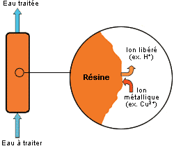 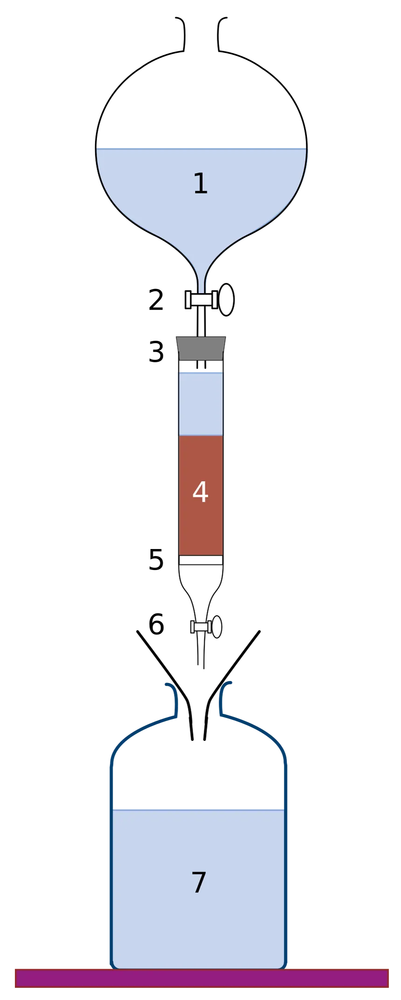Manipulation des Titres Alcalimétriques (TA / TAC)
Pour commencer cette manipulation, j’ai préparé 100 mL d’eau à analyser. J’y ai ajouté 0,05 mL de solution de thiosulfate de sodium afin de détruire le chlore libre, puis j’ai ajouté deux gouttes de phénolphtaléine.
Si aucune coloration rose n’est apparue, cela signifiait que le TA était nul. Sinon, j’ai réalisé un titrage à l’aide d’une solution d’acide chlorhydrique 0,02 M, en versant goutte à goutte à la burette jusqu’à la disparition complète de la coloration rose. Ce volume versé correspond au TA.
Lorsque le volume dépassait 20 mL, j’ai recommencé avec de l’acide chlorhydrique 0,1 M. J’ai ensuite ajouté deux gouttes du second indicateur (vert de bromocrésol – rouge de méthyle), et j’ai poursuivi l’ajout d’acide jusqu’au changement de couleur du vert-bleu au gris. Le volume total versé jusqu’à ce point m’a permis de déterminer le TAC.
Pour les calculs, j’ai utilisé les formules suivantes :
TA = V₁ (en °F) et TAC = V₂ (en °F) où V₁ et V₂ sont les volumes d’acide versés en mL.
Pour l’échantillon Y, j’ai réalisé un titrage supplémentaire à l’aide d’un pH-mètre. J’ai noté la valeur du pH pour chaque 1 mL de solution titrante ajoutée, et, dans les zones critiques indiquées par les indicateurs colorés, j’ai pris des mesures tous les 0,2 mL.
Ensuite, j’ai tracé informatiquement la courbe de suivi du pH, en m’assurant que le tableau de valeurs ainsi que la courbe soient bien lisibles avec quadrillage et échelles. J’ai déterminé graphiquement les volumes équivalents à partir du tracé.
Manipulation du Titre en Sels d’Acides Forts (SAF)
Pour cette manipulation, j’ai commencé par préparer une colonne en versant 10 mL de résine cationique forte dans une burette équipée d’un tampon de laine de verre. J’ai rempli la burette à moitié avec de l’eau déminéralisée.
J’ai ensuite fait passer successivement :
- 30 mL d’eau déminéralisée,
- 50 mL d’acide chlorhydrique concentré (HCl),
- 50 mL d’eau déminéralisée à un débit d’environ 10 mL/min.
J’ai contrôlé le pH de l’effluent après chaque passage pour vérifier qu’il revenait à la valeur initiale de l’eau déminéralisée. Une fois cela confirmé, j’ai considéré la résine prête à l’emploi et j’ai éliminé l’effluent.
Pendant toute la manipulation, j’ai veillé à conserver une garde de 2 mL d’eau au-dessus de la résine pour éviter qu’elle ne s’assèche.
Ensuite, j’ai introduit l’échantillon d’eau à analyser dans la colonne. En traversant la résine, les cations présents dans l’eau ont été échangés contre les protons de la résine, formant ainsi des acides forts comme H₂SO₄, HCl ou HNO₃.
J’ai ensuite titré ces acides par une solution de soude jusqu’à atteindre un pH suffisamment bas, afin d’éviter toute interférence de l’acide carbonique. Le volume de soude utilisé m’a permis de déterminer le titre SAF.
TPs d'Électrotechnique
Dans ces quatre TP, l'objectif principal était de réaliser des montages électriques et de comprendre comment fonctionnent les protections dans les installations. J'ai appris à utiliser des disjoncteurs, à gérer les risques de courts-circuits et de surcharges, et à mettre en place des protections différentielles pour assurer la sécurité des circuits. Chaque TP m'a permis de voir concrètement comment ces protections agissent et de mieux comprendre le comportement des récepteurs en alternatif.
TP1 - Récepteurs en Alternatif Monophasé
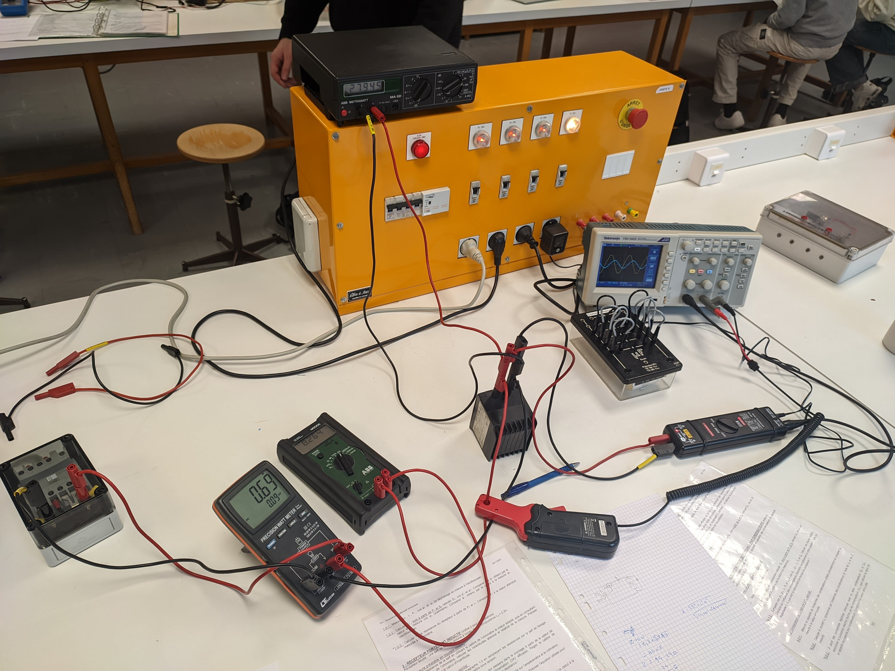Dans ce premier TP, le but était de comprendre les récepteurs monophasés, notamment les résistances. Pour ce faire, j'ai monté un circuit électrique simple en utilisant des résistances en série et en parallèle avec une source de tension alternative monophasée.
Mode opératoire :
- Montage du circuit : J'ai raccordé une résistance de charge à une source monophasée et j'ai utilisé un multimètre pour mesurer la tension à travers la résistance ainsi que l'intensité dans le circuit. Pour tester différents scénarios, j'ai ajouté des résistances en série et en parallèle.
- Mesures : À l'aide du multimètre, j'ai mesuré la tension à travers la résistance et l'intensité dans le circuit. En fonction de ces mesures, j'ai calculé la puissance dissipée par chaque récepteur. J'ai également observé la variation de la consommation d'énergie en fonction de la configuration des résistances.
- Calculs : À partir des mesures de tension et d'intensité, j'ai calculé la puissance (P = U × I) et j'ai comparé les résultats théoriques avec les mesures expérimentales.
TP 2 - Triphasé : Montage, mesures et analyse
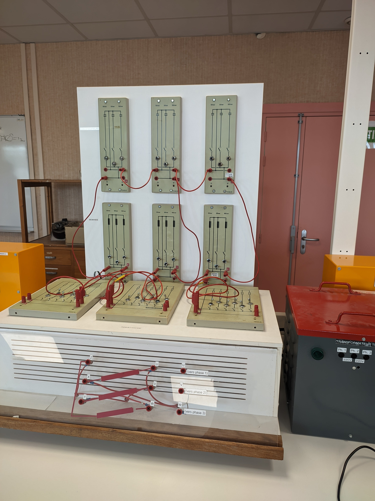Ce TP a été réalisé en groupe dans le but d'analyser les récepteurs triphasés, d'effectuer des mesures et de comprendre les phénomènes d'équilibre et de déséquilibre dans un circuit triphasé. Nous avons effectué plusieurs montages différents, chacun permettant d’observer le comportement des courants et des tensions dans des configurations particulières.
1. Montage étoile équilibré (Y)
Dans cette première étape, nous avons monté un récepteur triphasé en étoile équilibrée. Nous avons connecté quatre résistances, une bobine de 100 var et deux bobines de 50 var en parallèle entre chaque phase et le neutre. Ensuite, nous avons effectué les mesures des tensions simples (V1, V2, V3) ainsi que des tensions composées (U31) et des courants dans les fils de phase (I1Y, I2Y, I3Y). Nous avons également mesuré la puissance active sur la phase 3 (P3Y). Un calcul de la valeur moyenne des courants et des tensions a été effectué, et nous avons comparé les valeurs mesurées à celles théoriques pour calculer les écarts relatifs.
2. Montage étoile déséquilibré (Y)
Ensuite, nous avons réalisé un montage déséquilibré en étoile. Chaque phase a été équipée de différentes résistances et bobines pour introduire un déséquilibre dans le circuit. Nous avons mesuré les courants et les puissances actives sur chaque phase (INd, I1d, I2d, I3d, V2, P2d). Après avoir calculé les déphasages, nous avons effectué un bilan des puissances pour déterminer la puissance totale consommée par le récepteur déséquilibré. Nous avons aussi commenté la valeur du courant dans le neutre en régime déséquilibré.
3. Montage triangle équilibré (Δ)
Dans cette partie, nous avons monté les récepteurs en configuration triangle. Nous avons utilisé les mêmes éléments que dans le montage en étoile équilibré, mais cette fois en triangle. Nous avons mesuré les intensités des courants dans les fils de phase et les courants d’impédances, ainsi que les tensions entre chaque paire de phases (U12, U23, U31). Nous avons également calculé la puissance active totale consommée (PTΔ), la puissance réactive (QTΔ) et la puissance apparente (STΔ). Nous avons comparé ces valeurs à celles obtenues lors du montage en étoile.
4. Relèvement du facteur de puissance avec des condensateurs
Pour cette dernière étape, nous avons ajouté des condensateurs en étoile afin d'améliorer le facteur de puissance. Après avoir complété le montage avec trois condensateurs de 100 Var et six condensateurs de 50 Var, nous avons mesuré les nouvelles valeurs de courant, de puissance et de facteur de puissance. Nous avons ensuite comparé ces résultats avec ceux obtenus sans condensateurs pour analyser l'impact de l'ajout des condensateurs sur la puissance, le facteur de puissance et la réactivité du système.
En conclusion, ce TP nous a permis de comprendre les principes fondamentaux du circuit triphasé, d'analyser le comportement des récepteurs dans différents types de montages, et de mesurer l'impact des différents paramètres sur le fonctionnement global du circuit.
TP3 - Moteur Asynchrone Triphasé
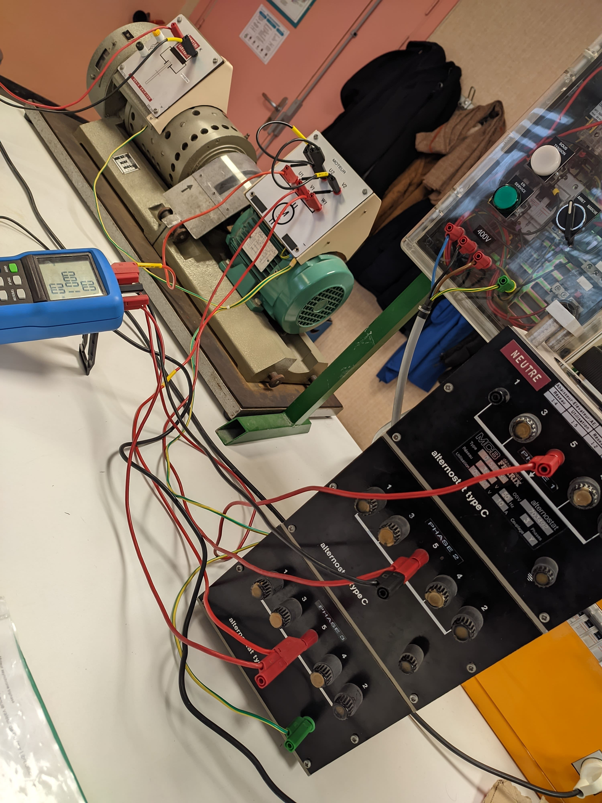Le TP3 a été réalisé en groupe pour étudier un moteur asynchrone triphasé et analyser ses performances sous différentes conditions de charge et de tension. Nous avons d'abord relevé les caractéristiques du moteur, notamment la tension de 230/400V, et calculé le couple utile nominal pour une tension de 400V. À partir de la vitesse nominale de fonctionnement, nous avons déterminé le nombre de paires de pôles et la vitesse de synchronisme. Le moteur a été mis sous tension à l'aide d'un sectionneur porte-fusibles, d'un contacteur tripolaire et d'un relais thermique. Nous avons également utilisé un autotransformateur pour démarrer progressivement le moteur et ajuster la tension d’alimentation.
Lors des essais sous tension nominale (400V), nous avons couplé le moteur conformément aux informations de la plaque signalétique, vérifié son sens de rotation avec un testeur d'ordre de phases, et réalisé un schéma complet du montage. Des mesures ont été effectuées pour différents couples utiles, permettant de tracer des courbes caractéristiques pour l'intensité, la puissance et le facteur de puissance. Les résultats expérimentaux ont été comparés aux valeurs théoriques. Nous avons également calculé les incertitudes de mesure pour la tension, l'intensité et la puissance.
Pour les essais sous tension réduite (230V), le moteur a été alimenté par un autotransformateur, et nous avons mesuré l'intensité et la vitesse pour des couples de 1 Nm et 1,3 Nm. Ces résultats ont été comparés aux valeurs obtenues sous tension nominale, et les rapports des couples et des intensités ont été vérifiés, confirmant que les résultats respectent les rapports théoriques attendus. Ce TP a permis de mieux comprendre le fonctionnement du moteur asynchrone triphasé et d'analyser son efficacité énergétique à travers des mesures et des comparaisons avec la théorie.
TP4 - Protection des Personnes et des Biens et Schéma Électrique
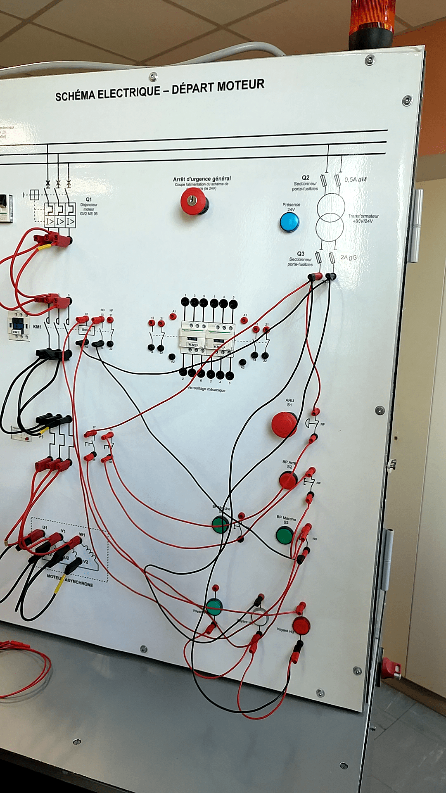 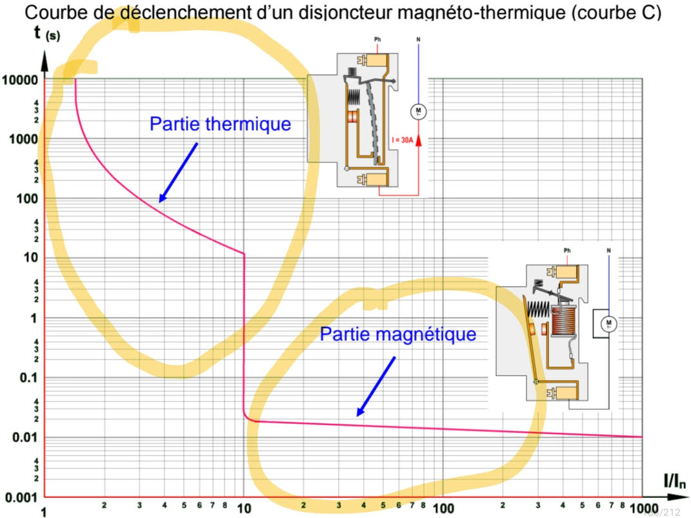 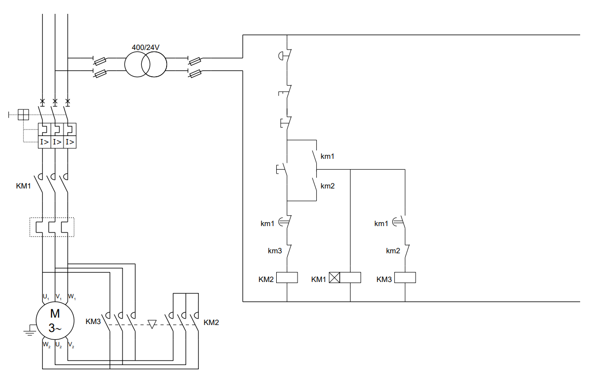Le dernier TP avait pour objectif de tester les protections contre les courts-circuits et les surcharges avec des disjoncteurs magnétothermiques et des disjoncteurs différentiels. J'ai simulé des défauts d'isolement et observé le comportement des protections pour garantir la sécurité des installations électriques et des utilisateurs.
Mode opératoire :
- Disjoncteurs magnétothermiques : J'ai observé le comportement des disjoncteurs de courbe B et C lors de la simulation de courts-circuits et de surcharges. En cas de surintensité, le disjoncteur s'est déclenché pour protéger les équipements, et j'ai noté le temps de coupure.
- Tests avec résistances de défaut : J'ai observé le fonctionnement des disjoncteurs différentiels lors de la création d'un défaut d'isolement entre la phase et la terre. Les disjoncteurs ont coupé l'alimentation lorsqu'un défaut a été détecté, et j'ai relevé le temps de coupure.
- Simulation de rupture du PE : J'ai simulé une rupture du conducteur de protection électrique (PE) et observé l'impact de cette rupture sur le système de protection, notamment le temps de coupure des dispositifs de protection.
SAÉs
Cliquez sur les icônes pour voir le rapport final de chaque SAÉ.
SAÉ 1.1
SAÉ 1.2
SAÉ 1.3
pertes thermiques par convection libre, rayonnement et conduction
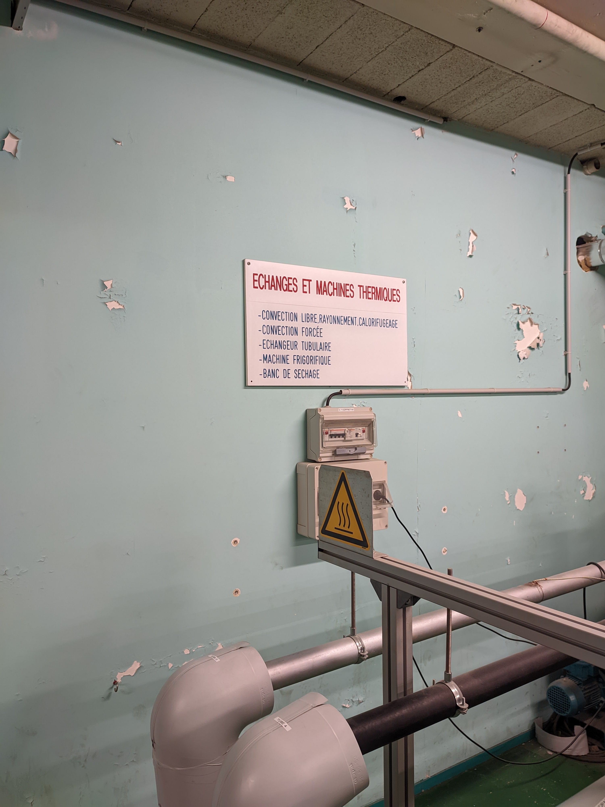 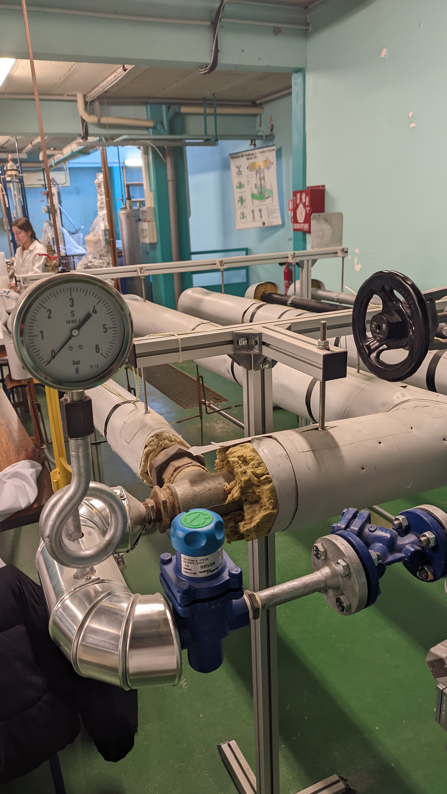Objectifs
L'objectif de cette étude est d'examiner les pertes thermiques par convection libre, rayonnement et conduction à travers des calorifuges. Les objectifs spécifiques sont :
- Étudier les pertes par convection libre sur des tubes nus.
- Mesurer les pertes par rayonnement en fonction des émissivités des tubes.
- Déterminer la conductivité thermique des calorifuges et comparer les résultats obtenus avec les valeurs théoriques et expérimentales.
Ce qu’on a fait
L'appareillage utilisé dans cette étude comprend cinq tubes en acier chauffés à la vapeur saturée et équipés de thermocouples pour mesurer la température sur les surfaces des tubes et des calorifuges. Les pertes thermiques ont été analysées en fonction du type de revêtement (peinture noire, peinture aluminium) et du type de calorifuge (Pyrogel XT 10 et Autopack). Les tubes ont été étudiés à une pression de vapeur saturée de 3 bars absolus.
Manipulations réalisées :
1. Alimentation en vapeur saturée des tubes avec réglage de la pression.
2. Installation des thermocouples à la surface des tubes et des calorifuges.
3. Suivi de l’évolution de la température avec le programme LabVIEW.
4. Mesure des débits d’eau condensée à différents instants pour calculer le flux de chaleur.
5. Mesure des pertes thermiques par convection, rayonnement, et conduction.
6. Comparaison des résultats obtenus avec les valeurs théoriques pour évaluer les propriétés thermiques des matériaux et des calorifuges.
Conclusion
Cette étude a permis de mettre en évidence l'importance des pertes thermiques par convection, rayonnement, et conduction dans un système de tubes en acier avec différents types de calorifuges. La mesure des pertes par convection a été effectuée à l'aide des corrélations théoriques et expérimentales, en comparant les résultats avec ceux obtenus pour des tubes nus et calorifugés. L’étude a montré que les pertes par rayonnement sont significatives et dépendent fortement de l’émissivité des tubes et des calorifuges.
En ce qui concerne la conductivité thermique, les valeurs obtenues pour les deux types de calorifuges ont été comparées aux valeurs de la littérature, et des ajustements ont été nécessaires pour tenir compte des pertes par convection libre et rayonnement. Les résultats obtenus permettent également de conclure que les flux de chaleur par rayonnement sont non négligeables dans les tubes calorifugés et doivent être pris en compte pour des calculs thermiques plus précis.
En conclusion, cette étude expérimentale a permis de mieux comprendre les mécanismes de transfert de chaleur dans des systèmes thermiques complexes, et de valider les modèles théoriques par des mesures expérimentales sur des tubes nus et calorifugés.
TP2 : ETUDE DE LA CONVECTION FORCEE
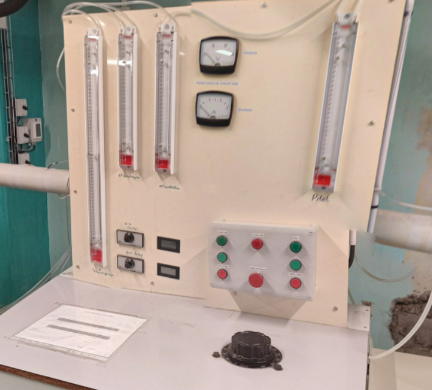 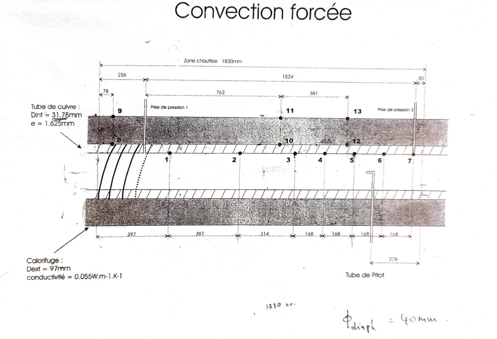La convection est un transfert de chaleur entre un fluide et une paroi, qui peut être naturel ou forcé. La convection forcée se produit lorsque le mouvement du fluide est induit par un dispositif externe, tel qu'un ventilateur ou une pompe, contrairement à la convection naturelle où le fluide se déplace sous l'effet des différences de température (exemple : l’air chaud qui monte autour d'un radiateur).
Le transfert de chaleur par convection suit la loi de Newton :
Q = h × S × (Tsurface - Tfluide)
où h est le coefficient de convection, S est la surface d'échange, et (Tsurface - Tfluide) est la différence de température entre la surface et le fluide.
L'objectif principal de cette manipulation est de déterminer expérimentalement plusieurs paramètres liés au phénomène de convection forcée :
- Le coefficient d’échange thermique h.
- Les nombres sans dimension de Nusselt (Nu), Reynolds (Re), Prandtl (Pr) et Stanton (St).
- Le coefficient de frottement f.
- Comparer ces résultats avec les valeurs théoriques et les formules empiriques.
- Étudier la répartition des vitesses dans la veine fluide à l'aide d'un tube de Pitot.
L’appareillage utilisé pour cette étude comporte les éléments suivants :
- Un ventilateur pour induire la circulation du fluide.
- Un diaphragme de diamètre 40 mm pour créer une restriction dans le flux d'air.
- Un tube en cuivre calorifugé de 1,83 m de longueur, équipé de thermocouples pour mesurer la température et de prises de pression.
- Un panneau de commande et des appareils de mesure pour surveiller les paramètres de l'expérience.
- Un thermomètre à mercure pour mesurer la température à l’entrée du tube en cuivre.
La manipulation s'effectue en plusieurs étapes :
- Étude de la répartition des vitesses à l'aide du tube de Pitot
Le ventilateur est démarré et la pression est mesurée à différentes positions du tube de Pitot, permettant de déterminer la vitesse du fluide à chaque point. La relation entre la pression et la vitesse de l’air est donnée par la formule suivante :
Vair = √(2 × ΔP / ρair)
Où ΔP est la différence de pression mesurée, et ρair est la masse volumique de l'air. - Étude du transfert de chaleur
Le ventilateur est démarré et les températures sont mesurées toutes les 5 minutes pour obtenir un régime permanent. Ensuite, le courant de chauffage est activé et l'intensité du courant est augmentée. Les températures sont à nouveau relevées pour chaque nouvelle condition de chauffage (2,5 A et 5 A).
Les paramètres à mesurer comprennent la pression de l’air, la température de l’air à l’entrée, et les températures des différents thermocouples à différentes positions le long du tube.
L'exploitation des mesures se décompose comme suit :
- Calcul du débit d'air
Le débit volumique d'air est calculé avec la formule :
Q = Ca × √(2 × g × Δh)
Où Ca est le coefficient du diaphragme, g la gravité et Δh la chute de pression exprimée en hauteur d'air. - Détermination de la zone d'étude
Une courbe des températures mesurées par les thermocouples est tracée pour déterminer la zone du tube où les perturbations sont négligeables. - Estimation du coefficient global d'échange
Le coefficient d'échange est estimé à partir de la dissipation de chaleur dans la zone d'étude et de la température de l'air moyen, en supposant que la puissance de chauffe est uniformément répartie. - Calcul du nombre de Nusselt expérimental
Le nombre de Nusselt est calculé en fonction du coefficient de convection et de la conductivité thermique de l'air. Les résultats obtenus sont ensuite comparés aux valeurs théoriques fournies par l'expression empirique.
Conclusion
Ce TP a permis de déterminer expérimentalement plusieurs paramètres relatifs à la convection forcée dans un tube. Les valeurs obtenues pour les nombres de Nusselt, Reynolds, et Stanton ont été comparées aux valeurs théoriques, permettant ainsi de valider les formules empiriques utilisées. L'étude de la répartition des vitesses a également fourni des informations sur le profil de vitesse du fluide dans la canalisation. Ces résultats contribuent à une meilleure compréhension du phénomène de convection forcée dans les systèmes thermiques.
TP3: Echangeurs Thermiques
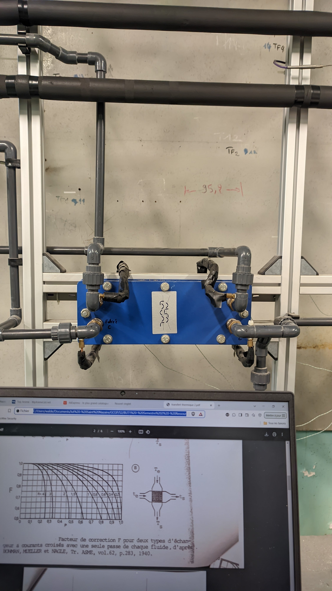 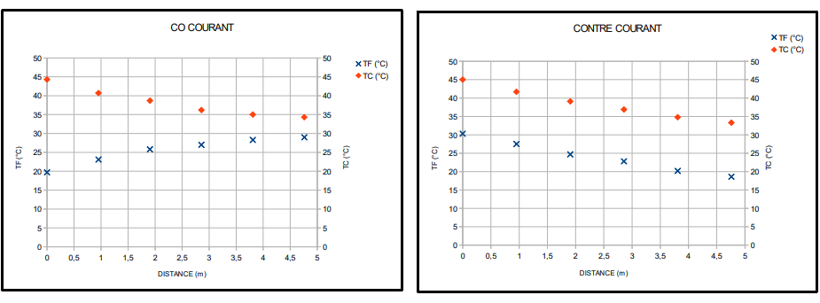L'objectif principal de cette manipulation est d'étudier les performances d’un échangeur tubulaire en :
- Mesurant les températures et les débits des fluides.
- Calculant le coefficient d'échange thermique global (K).
- Évaluant l'efficacité du transfert thermique en fonction du mode d'écoulement (co-courant et contre-courant).
- Comparant les résultats expérimentaux avec les prédictions théoriques basées sur les propriétés des fluides et les géométries de l'échangeur.
L'appareillage utilisé pour cette étude comprend les éléments suivants :
- Un échangeur tubulaire à tubes en cuivre, placé dans un boîtier en inox.
- Un réservoir d'eau chaude pour le fluide chaud, et un réservoir d'eau froide pour le fluide froid.
- Deux rotamètres pour mesurer les débits respectifs des fluides chaud et froid.
- Des thermocouples pour mesurer les températures à différents points de l'échangeur.
- Des vannes pour ajuster les débits des fluides.
- Un panneau de commande pour le contrôle des paramètres de l'expérience.
La manipulation s'effectue en plusieurs étapes :
- Réglage des débits des fluides :
Les débits de fluide chaud et froid sont réglés à l'aide des rotamètres. Les vannes sont ajustées pour obtenir les débits souhaités dans les deux circuits. - Mesure des températures :
Les températures des fluides chaud et froid sont mesurées à l’entrée et à la sortie de l’échangeur, ainsi que sur des points intermédiaires pour établir un profil de température. - Étude des modes d'écoulement :
L'expérience est menée successivement dans les modes co-courant et contre-courant, permettant de comparer l'efficacité du transfert thermique dans chaque configuration. - Stabilisation et collecte des données :
Une fois les débits et températures stabilisés, les mesures sont prises à intervalles réguliers pour garantir la précision des résultats.
L'exploitation des mesures se fait de la manière suivante :
- Calcul du flux thermique :
Le flux thermique transféré est calculé en utilisant la formule :
Q = m × Cp × (Tentrée - Tsortie)
où m est le débit massique, Cp la capacité calorifique du fluide, et les températures d'entrée et de sortie sont mesurées expérimentalement. - Calcul du coefficient d'échange global :
Le coefficient d'échange thermique global est estimé à partir des données de température, du débit et de la géométrie de l’échangeur, selon la formule :
U = Q / (S × ΔT)
où S est la surface d'échange, et ΔT est la différence de température entre les deux fluides. - Analyse de l'efficacité :
L'efficacité du transfert thermique est évaluée en comparant les résultats expérimentaux avec les valeurs théoriques et en calculant le nombre d'unités de transfert (NUT). - Comparaison des modes d'écoulement :
Les performances des modes co-courant et contre-courant sont comparées pour déterminer lequel offre le meilleur rendement thermique.
Conclusion
Ce TP a permis d’étudier les performances d'un échangeur tubulaire en fonction des débits et des modes d'écoulement. Les résultats expérimentaux ont montré que l’échangeur fonctionne de manière plus efficace en mode contre-courant, comme le prédisent les théories thermiques. Le calcul du coefficient d’échange global et du NUT a permis de valider les modèles théoriques utilisés dans la conception de l’échangeur.
TP4: Conductivité thermique
Objectifs
Étudier le transfert thermique dans des matériaux soumis à différentes conditions aux limites, notamment en régime transitoire et permanent. Analyser le comportement thermique de deux matériaux (cuivre et aluminium) en utilisant diverses méthodes expérimentales et théoriques pour déterminer leur conductivité thermique et leurs propriétés de convection.
Ce qu’on a fait
Le dispositif expérimental a consisté en un ensemble de cylindres (2 en cuivre et 2 en aluminium) de longueur L = 83 cm et de diamètre d = 4 cm. Chaque cylindre a été mis en contact par une de ses extrémités avec un collier chauffant. Des thermocouples ont été installés sur les barres pour mesurer la température à différents points. Le dispositif a été contrôlé via un programme LabVIEW, permettant de suivre l’évolution des températures et de simuler différents régimes de transfert thermique.
Pour mener à bien l’expérience, les étapes suivantes ont été suivies :
1.La température imposée de 60°C a été appliquée à une extrémité des cylindres.
2. La température et le flux thermique ont été mesurés et enregistrés à des intervalles réguliers pour déterminer les profils de température.
3. Les essais ont été réalisés pour atteindre un régime permanent et en régime transitoire, avec refroidissement à l'autre extrémité des barres.
4. Les résultats ont été analysés en calculant la conductivité thermique et les coefficients de convection en utilisant des corrélations théoriques et en comparant les valeurs obtenues avec les mesures expérimentales.
5. Des calculs ont été effectués pour déterminer le nombre de Fourier et l'évolution de la température dans les matériaux étudiés en fonction du temps et de la position.
Conclusion
L’expérience a permis de mieux comprendre les mécanismes du transfert thermique en régime permanent et transitoire pour les matériaux étudiés. Les résultats expérimentaux ont confirmé la validité des modèles théoriques utilisés, notamment en ce qui concerne les calculs des coefficients de conduction et de convection. L'étude a également mis en évidence les différences de performance thermique entre le cuivre et l'aluminium, ce qui pourrait être pertinent pour les applications nécessitant un bon transfert de chaleur.
TP 1 : MACHINE FRIGORIFIQUE À COMPRESSION

1. Objectif et Principe de l'Étude
L'objectif de ce TP était de caractériser le cycle thermodynamique du fluide frigorigène (R134a) dans un système frigorifique à compression et d'analyser les performances énergétiques du compresseur et du groupe frigorifique. Deux essais ont été réalisés avec des puissances de 500 W et 1000 W, tout en maintenant un débit d'eau constant au condenseur.
2. Apparillage
Le système utilisé était une unité de réfrigération DELTALAB fonctionnant avec le R134a, comprenant :
- Un compresseur à double cylindre de 75,5 cm³.
- Une vanne thermostatique de détente.
- Un évaporateur avec résistance chauffante permettant d'ajuster la puissance calorifique.
- Un condenseur avec contrôle du débit d'eau pour ajuster la pression.
3. Manipulation
Avant de commencer, l'équipement a été vérifié et les vannes ont été ouvertes. L'installation a été mise en marche, et la puissance de chauffage de l'évaporateur a été progressivement ajustée à 300 W, puis augmentée à 600 W. Les mesures ont été prises toutes les 5 minutes jusqu'à atteindre un régime permanent, où les températures et pressions sont restées constantes.
4. Analyse des Résultats
Les résultats des tests ont été utilisés pour tracer le cycle thermodynamique sur le diagramme p=f(h), calculer les échanges de chaleur et de travail, ainsi que les coefficients de performance. Le rendement du compresseur, ainsi que la puissance à l'arbre et la puissance électrique ont été calculés et comparés.
5. Conclusion
Les résultats ont montré que le système fonctionnait conformément aux attentes. Le bilan thermique a été vérifié, et des améliorations pour optimiser le coefficient de performance ont été proposées.
TP 2 : NOTIONS D’AIR HUMIDE – SÉCHAGE
1. But et Principe de l'Étude
L'objectif de ce TP était de se familiariser avec les mesures d'humidité de l'air dans des environnements variés, tant à l'intérieur qu'à l'extérieur du hall, ainsi que lors des opérations d'évaporation et de séchage. Nous avons également étudié l'injection de vapeur dans un caisson dédié. En utilisant différents hygromètres, nous avons pu exploiter les données en appliquant les notions thermodynamiques vues en cours.
2. Apparillage
Pour réaliser les mesures d'humidité, nous avons utilisé un hygromètre à deux thermomètres pour les environnements à l'intérieur et à l'extérieur du hall. À l'intérieur du caisson, les caractéristiques de l'air étaient déterminées par la mesure de la température et de l'humidité relative à l'aide de sondes Pt100 et de sondes capacitives. Le débit d'air a été mesuré avec un débitmètre à hélice, et la puissance calorifique était ajustée grâce à un rhéostat.
Les capteurs ont été disposés comme suit :
- À l'entrée du ventilateur : mesure de la température (θ1) et de l'humidité relative (HR1).
- À la sortie du caisson : mesure de la température (θ2) et de l'humidité relative (HR2).
3. Rappels Théoriques
L'air atmosphérique est un mélange de gaz, dont la vapeur d'eau, qui est le seul composant capable de changer d'état aux températures et pressions ambiantes. En utilisant la température et la pression de vapeur saturante, nous avons pu calculer l'humidité relative et absolue de l'air, ce qui a permis d'analyser le processus de séchage.
Les principales relations utilisées pour les calculs étaient :
- Humidité relative (HR) : HR = (pv / pvs) * 100
- Humidité absolue : xs = (pv / pvs) * xs_max(θ)
- Volume massique : v = (R * T) / (p - pv)
4. Manipulation et Exploitation des Mesures
4.1. Mesure de l’humidité de l’air avec un hygromètre à deux thermomètres
Nous avons mesuré la température humide (θh) et la température sèche (θs) dans différentes ambiances (salle de manipulation, extérieur, etc.) en utilisant l'hygromètre à deux thermomètres. Ces données nous ont permis de calculer l'humidité absolue et relative de l'air. Nous avons comparé les résultats avec ceux donnés par le diagramme psychrométrique et le réglet de l'hygromètre.
4.2. Séchage par évaporation
Trois phases ont été réalisées lors de cette manipulation :
- Phase I : Résistances chauffantes hors tension (sans chauffage).
- Phase II : Résistances chauffantes sous tension (chauffage en fonctionnement).
- Phase III : Résistances chauffantes sous tension et échantillon humide suspendu (séchage de l’échantillon).
Nous avons mesuré les températures, l'humidité relative et la masse de l'échantillon humide à chaque phase pour observer l'évolution du processus de séchage.
4.3. Conclusion et Analyse des Résultats
À partir des résultats des différentes phases, nous avons analysé l'évolution des paramètres thermodynamiques de l'air (température, humidité) et de l'échantillon humide (masse, taux d'évaporation). Nous avons réalisé des bilans thermiques et massiques pour évaluer l'efficacité du séchage et confirmer le bon déroulement des processus de séchage et d'évaporation.
5. Conclusion Générale
Ce TP nous a permis de mieux comprendre les phénomènes liés à l'humidité de l'air et au séchage par évaporation. Les résultats expérimentaux ont confirmé l'importance de la température et de l'humidité relative pour optimiser le processus de séchage. Grâce à ces manipulations, nous avons pu démontrer l'impact de ces facteurs sur l'efficacité du séchage, et proposer des améliorations pour optimiser ce processus.
TP 3 : Calorimétrie
1. But et Principe de l'Étude
Ce TP avait pour objectif de nous initier aux mesures calorimétriques. Au cours de cette séance, nous avons réalisé les expériences suivantes par la méthode du mélange :
- La détermination de la valeur en eau d'un calorimètre.
- La détermination de la chaleur spécifique d'un métal.
- La détermination de la chaleur latente de fusion de l'eau.
Pour chaque mesure, nous avons calculé les incertitudes absolues et relatives. À la fin, nous avons analysé la pertinence des protocoles opératoires et identifié les grandeurs ayant le plus d'impact sur les résultats obtenus.
2. Apparillage
Le matériel utilisé comprenait :
- Un calorimètre à eau en aluminium, isolé thermiquement par du polystyrène cellulaire, avec un couvercle équipé d’un agitateur manuel.
- Un thermomètre digital avec une plage de -20°C à 150°C, une résolution de 0,3°C.
- Une balance Sartorius (portée = 3100 g ± 0,1 g) pour les pesées.
- Un chronomètre pour mesurer le temps.
- Une plaque chauffante électrique et un bécher en pyrex de 2000 mL pour chauffer l’eau.
- Un thermomètre à bulbe gradué pour suivre l’évolution de la température de l’eau dans le bécher.
- Un vase Dewar pour maintenir le mélange eau + glace à 0°C.
- Un support statif et une pince pour maintenir les échantillons.
Le calorimètre a été mis à température ambiante avec de l’eau stockée dans un bidon en polyéthylène de 10 litres.
3. Rappels Théoriques
3.1. Valeur en eau du calorimètre
La valeur en eau d'un calorimètre correspond à la masse d'eau fictive (µ₀) qui échange la même quantité de chaleur avec l'extérieur que le calorimètre lorsqu'il subit la même variation de température (Δθ). Le bilan thermique s’exprime ainsi :
Qcalo = µ₀ * cpeau * Δθ
3.2. Méthode du mélange
La chaleur spécifique d'un solide est déterminée en le mettant en contact thermique avec une quantité d'eau à température connue dans le calorimètre. La température d'équilibre du mélange permet de calculer cette chaleur spécifique.
3.3. Calcul des incertitudes
Pour chaque mesure, nous avons calculé l’incertitude relative et absolue en suivant la méthode de dérivation des grandeurs mesurées. Par exemple :
- ΔC = erreur absolue (en même unité que la grandeur mesurée)
- ΔV = erreur relative (%)
4. Manipulation
4.1. Masse du calorimètre
Nous avons pesé le calorimètre sec, muni de son couvercle, et noté cette masse (mcalo).
4.2. Mise à température ambiante du calorimètre
Avant chaque manipulation, le calorimètre a été mis à température ambiante. Si ce n’était pas le cas, nous avons utilisé la procédure suivante :
- Vider le calorimètre si nécessaire.
- Verser environ 250 mL d’eau à température ambiante dans le calorimètre et laisser reposer pendant 5 minutes.
- Peser le calorimètre et déterminer la masse d’eau résiduelle (µ₁).
4.3. Détermination de la valeur en eau du calorimètre
Ensuite, environ 1000 mL d’eau ont été chauffés à 50°C et versés dans le calorimètre. Nous avons mesuré l’évolution de la température à l’intérieur du calorimètre pendant 5 minutes en prenant des mesures toutes les 5 secondes. Après avoir atteint la température d’équilibre, nous avons noté les résultats.
4.4. Détermination de la chaleur spécifique d'un métal
Pour mesurer la chaleur spécifique d'un métal, nous avons suivi ces étapes :
- Amener à ébullition environ 1000 mL d’eau dans un bécher en pyrex.
- Verser 200 mL d’eau à température ambiante dans le calorimètre.
- Peser l’échantillon métallique et le placer dans l’eau bouillante.
- Placer l’échantillon métallique dans le calorimètre et mesurer l’évolution de la température du système jusqu'à ce que la température d'équilibre soit atteinte.
5. Exploitation des Mesures et Compte Rendu
5.1. Valeur en eau du calorimètre
Nous avons tracé l’évolution de la température pour chaque essai. En analysant ces courbes, nous avons déterminé la température d’équilibre et calculé la valeur en eau (µ₀) du calorimètre.
Les incertitudes absolues et relatives ont été déterminées en prenant Δθ = 0,3°C et Δm = 0,1 g. Nous avons comparé les incertitudes avec la dispersion des résultats et tiré des conclusions sur la précision de nos mesures.
5.2. Chaleur spécifique d’un métal
De même, nous avons tracé l’évolution de la température pour chaque essai afin de déterminer la chaleur spécifique du métal. En comparant nos résultats avec les valeurs de référence, nous avons évalué la précision de nos mesures.
Les incertitudes ont également été calculées pour cette partie de l'expérience, et nous avons comparé les résultats obtenus avec les valeurs théoriques ou données dans la littérature pour en tirer des conclusions.
6. Conclusion
Ce TP nous a permis d'appréhender les concepts de calorimétrie et d'incertitudes associées aux mesures thermiques. Nous avons pu mettre en évidence l'impact des protocoles opératoires sur la précision des résultats, et avons identifié les grandeurs les plus influentes dans nos calculs de chaleur spécifique et de chaleur latente de fusion.
TP : Cycle Moteur – Moteur Stirling
Dans ce TP, nous avons étudié le principe du cycle moteur à travers un moteur Stirling et réalisé diverses analyses thermodynamiques. Voici un résumé des principales étapes et résultats obtenus :
1. Étude du principe du cycle moteur
Le cycle moteur étudié est un moteur thermique fonctionnant grâce à l’expansion et à la compression d’un gaz dans un cylindre piston. L'air est chauffé dans un bain chaud et refroidi dans un bain froid, ce qui permet d’effectuer un travail sur une masse.
Théorie
Le rendement théorique d’une machine thermique, selon le cycle de Carnot, est donné par la formule :
ηCARNOT(%) = (1 − TF / TC) × 100
Le rendement réel est défini comme :
ηréel(%) = (-W / QC) × 100
Où W représente le travail fourni par la machine et QC la chaleur extraite de la source chaude.
Procédure et exploitation
Nous avons suivi les étapes suivantes pour réaliser le cycle moteur :
- Placer le cylindre piston sur le statif et connecter tous les capteurs (pression et température).
- Placer une masse de 100g sur la plateforme et déplacer la chambre en aluminium du bain froid au bain chaud.
- Mesurer la pression, la température et la position du piston à chaque point du cycle.
- Calculer les valeurs de chaleur et de travail selon les différentes étapes du cycle.
Chaleur et Travail
Nous avons calculé la chaleur apportée au gaz pendant les différentes étapes du cycle. Nous avons également mesuré le travail fourni par le gaz en fonction de la masse déplacée.
Rendement
Le rendement idéal (ηCARNOT) et le rendement réel (ηréel) ont été calculés et comparés pour évaluer l'efficacité du moteur thermique.
2. Moteur Stirling
Le moteur Stirling fonctionne grâce à un fluide contenu dans un cylindre fermé, chauffé par une source thermique extérieure. Ce moteur utilise un cycle thermodynamique réversible et est particulièrement intéressant d’un point de vue écologique, car il ne produit pas d’échappement et utilise toujours le même gaz de travail.
Matériel
Nous avons utilisé un moteur Stirling fourni par la société PRODIDAC, avec un module de commande H112 et un module d’accompagnement pour récupérer des données spécifiques comme le couple moteur, la vitesse de rotation et la température de la source chaude.
Rappels de thermodynamique
Les équations fondamentales du premier et du second principe de la thermodynamique ont été utilisées pour analyser les transformations thermiques dans le moteur Stirling, notamment la relation entre chaleur, travail et rendement.
Calcul du rendement thermique
Le rendement thermique réel a été calculé en utilisant la formule :
η (%) = (P / Q) × 100
Où P est la puissance récupérée à l'arbre du moteur et Q est la chaleur fournie au moteur.
Conclusion
Le TP a permis d'étudier en détail le fonctionnement d'un moteur thermique, en utilisant un moteur Stirling comme modèle. Les résultats expérimentaux ont été comparés aux théories thermodynamiques, et le rendement du moteur a été évalué. Nous avons constaté une différence entre le rendement idéal et réel, ce qui montre les limitations des moteurs réels par rapport à la théorie.
Ecoulement gazeux dans un Garnissage sec
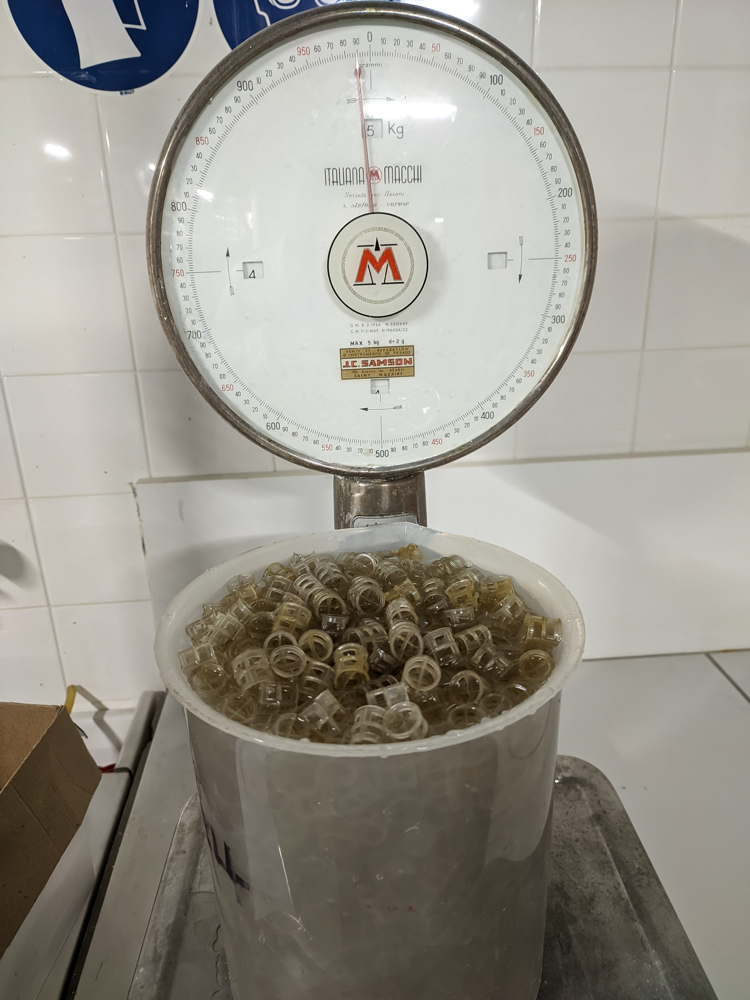 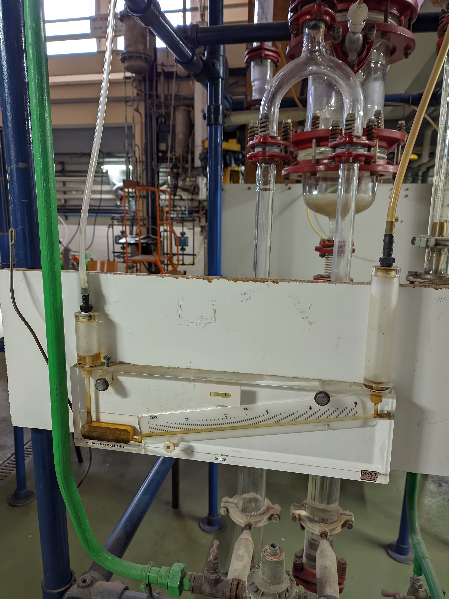Objectifs
L'objectif de cette expérience est d'étudier l'écoulement gazeux dans un garnissage sec, en utilisant les principes de la relation d'Ergun pour évaluer la chute de pression dans le lit fixe. On cherche à déterminer la porosité du lit ainsi que le débit massique du gaz traversant le diaphragme, en tenant compte des diverses pertes de charge dans la colonne d'écoulement.
Ce qu’on a fait
L’expérience a été réalisée dans une colonne équipée de garnissage en anneaux PALL en polypropylène. Le débit d'air entrant dans la colonne a été réglé via une vanne de fuite. Un diaphragme a été placé en amont pour mesurer les pertes de charge et déterminer le débit massique du gaz à partir de la pression différentielle. La pression a été mesurée dans plusieurs points, notamment au niveau du diaphragme et de la colonne, avec un manomètre en tube "U".
Les étapes suivantes ont été suivies pour mener à bien l'expérience :
1. Fixation des pertes de charge dans la colonne en ajustant l'ouverture de la vanne de fuite.
2. Mesure des pertes de charge à travers le diaphragme et en amont du diaphragme.
3. Relevé de la température de l'air entrant dans la colonne.
4. Calcul de la porosité du lit fixe et détermination du débit massique du gaz en fonction des mesures obtenues.
En parallèle, on a utilisé la formule d'Ergun pour estimer la chute de pression dans le garnissage sec, et la viscosité de l'air a été calculée à partir de la température.
Conclusion
Cette expérience a permis d'analyser l'écoulement gazeux dans un garnissage sec et de comprendre les phénomènes associés à la chute de pression dans un lit fixe. Les résultats obtenus ont permis de déterminer la porosité du lit ainsi que le débit massique du gaz en fonction des différents paramètres expérimentaux. L'utilisation de la relation d'Ergun pour évaluer les pertes de charge a également été confirmée par les mesures effectuées.
Fluidisation
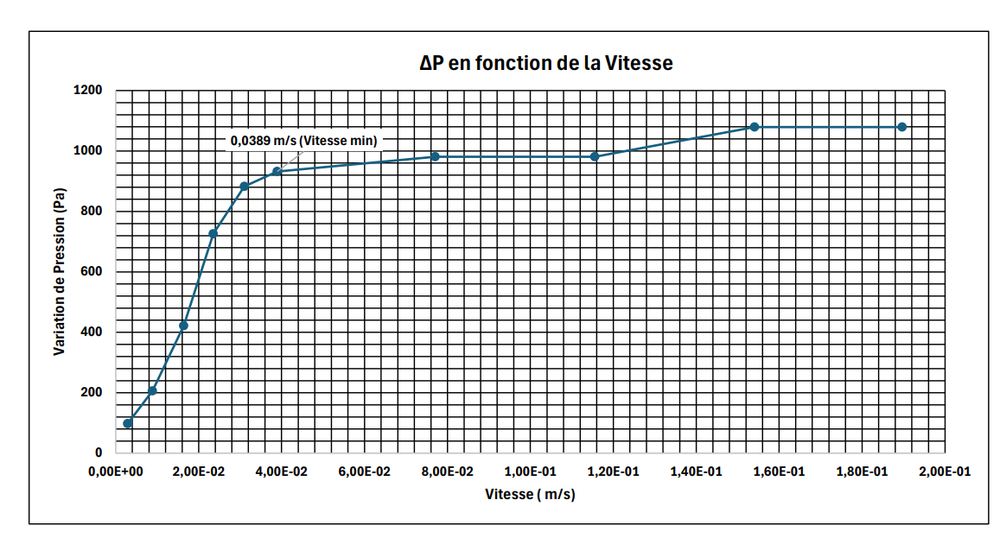 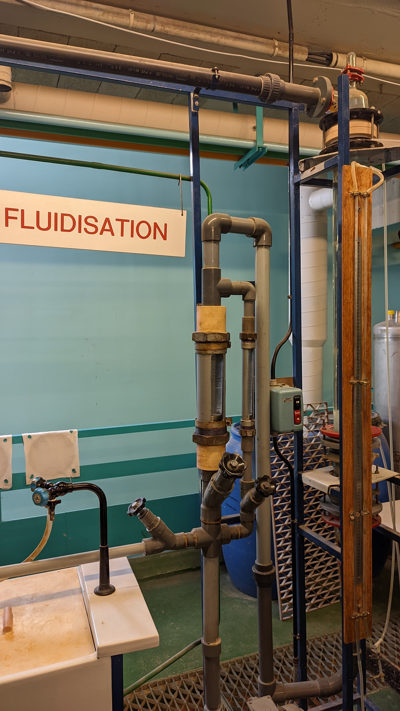1. Principe de fonctionnement de la colonne de fluidisation (ou fluidiseur)
Le fluidiseur se présente sous la forme d'une colonne verticale équipée d'une grille de support à sa base, sur laquelle repose un lit de particules à fluidiser. Le fluide (ici de l'eau) est introduit sous cette grille.
Pour des débits faibles, le lit reste fixe et la pression du fluide augmente progressivement avec le débit. À partir d'un certain débit, cette pression devient égale au poids du lit par unité de surface, et le lit commence alors à se soulever, ce qui marque le début de la fluidisation. La hauteur du lit augmente avec le débit, tandis que la chute de pression reste constante.
Si l'on augmente encore le débit, la vitesse atteint celle des particules qui tombent en chute libre dans un fluide immobile. À ce moment, les grains du lit sont entraînés par le courant de fluide.
2. Étude de l'écoulement d'un fluide à travers un empilement de sphères
a. En lit fixe
La chute de pression à travers un lit fixe poreux est donnée par l'équation d'Ergun :
AP = (1-e) * (PG / HG) * (UG² / Z) + (2 * (1 - e) * UG / (e² * Z))
Le comportement de l'écoulement à travers le lit dépend du nombre de Reynolds, qui nous permet de définir le régime d'écoulement :
- Régime laminaire : Re ≤ 1
- Régime intermédiaire : 1 ≤ Re ≤ 400
- Régime turbulent : Re ≥ 400
b. En lit fluidisé
La fluidisation commence lorsque la perte de charge est égale au poids apparent du lit par unité de surface :
AP = (1-E) * (PG) * g * Z
À partir de cette relation, on peut déterminer la vitesse minimale de fluidisation. Si cette vitesse est atteinte, on peut parler de fluidisation homogène lorsque le nombre de Froude (Fr) est inférieur à 1, et hétérogène lorsque ce nombre est supérieur à 1.
La vitesse minimale de fluidisation est donnée par :
umin = √(g * d / Fr)
c. Lors de l'entraînement du lit
Lorsque le débit continue d'augmenter, la vitesse atteinte devient suffisante pour entraîner le lit en dehors de la colonne. Cette vitesse varie en fonction du régime d'écoulement, déterminé par le nombre de Reynolds des particules :
- En régime laminaire (Re < 1) :
Umax = (2 * (Pg - Pi) * g * d) / (9 * η) - En régime intermédiaire (1 < Re < 1000) :
Umax = 10.71 * √((Pg - Pi) * g * d) / (P) - En régime turbulent (Re > 1000) :
Umax = √((3 * d * (Pg - Pi) * g))
La porosité d'un lit poreux
La porosité d'un lit poreux peut être calculée à partir de la masse volumique du lit et de la hauteur du lit selon la formule suivante :
ε = 1 - (M / (Pg * 2 * Z))
III. MANIPULATION :
J'ai allumé l'installation en appuyant sur le bouton noir du boîtier électrique. Ensuite, j'ai réglé le débit d'eau d'alimentation de la colonne selon les valeurs spécifiées dans l'annexe du TP. Les rotamètres étaient déjà étalonnés, donc chaque graduation correspondait à une valeur de débit précise.
J'ai veillé à ce que, si le fluide passait par le grand rotamètre, le petit rotamètre soit fermé, et inversement, pour garantir des mesures correctes.
Pour chaque débit que j'ai fixé sur l'installation, j'ai noté la perte de charge dans le lit poreux et la hauteur du lit. Le lit repose sur une grille.
Permeametrie
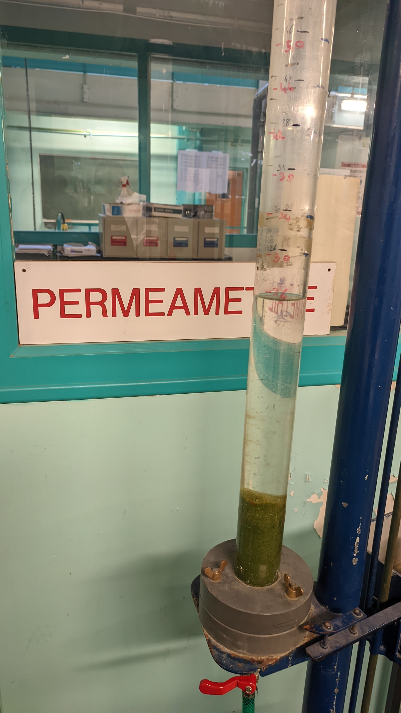 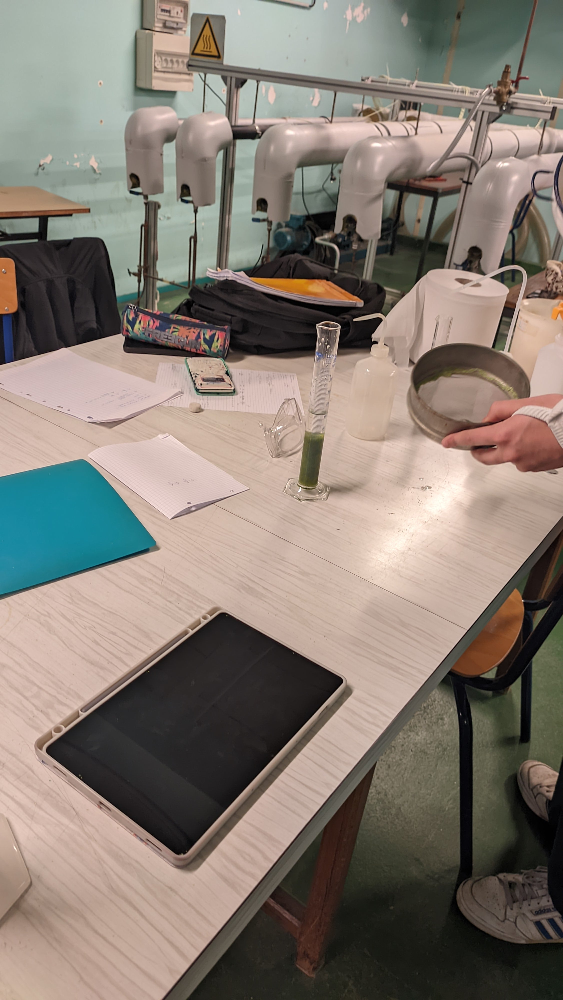Objectifs
L'objectif de cette expérience est de déterminer la perméabilité d'un lit fixe poreux constitué de billes sphériques et d'étudier l'écoulement d'un fluide à travers ce lit. L'expérience permet d'analyser la chute de pression à travers un lit fixe et de comprendre l'impact des paramètres tels que la porosité, la viscosité dynamique et la vitesse d'écoulement sur la perméabilité du lit.
Ce qu’on a fait
L'installation utilisée comprenait une colonne remplie de billes sphériques, une vanne de vidange, un déversoir, et un dispositif de mesure du temps pour suivre l'écoulement de l'eau. Les étapes suivies étaient :
1. Préparation du lit fixe :
- Fermeture de la vanne située sur le tuyau de vidange.
- Placement du déversoir au niveau de la base du lit de billes.
- Remplissage de la colonne d'eau jusqu'à une hauteur de 60 cm.
- Introduction des billes dans la colonne par le haut.
2. Mise en place de l'écoulement à travers le lit fixe :
- Ouverture de la vanne de vidange pour permettre à l'eau de s'écouler.
- Déclenchement du chronomètre lorsque le niveau d'eau atteint h = 50 cm.
- Mesure du temps nécessaire pour que l'interface eau-air passe devant les graduations définies.
3. Calcul de la porosité du lit fixe à l'aide des volumes d'eau et de billes mesurés dans des éprouvettes.
À partir de ces étapes, les données collectées ont permis de calculer la perméabilité du lit en utilisant les relations théoriques données, ainsi que d'estimer la porosité du lit fixe.
Conclusion
Cette expérience a permis de déterminer la perméabilité du lit fixe et d'analyser l'écoulement du fluide à travers ce lit. Les résultats obtenus ont validé les théories de perméabilité en fonction du régime d'écoulement, et ont montré que la porosité du lit influençait directement la vitesse d'écoulement et la chute de pression. L'utilisation de la relation de Darcy pour le régime laminaire a été confirmée par les résultats expérimentaux.
Etude des pertes de charge
Objectifs
L'objectif de ce TP est d'étudier les pertes de charge dans des canalisations de différents diamètres et matériaux, ainsi que les effets des singularités sur ces pertes. Plus précisément, il s'agit de mesurer les pertes de charge régulières et singulières pour différentes configurations et d'en déduire les coefficients de pertes de charge et les longueurs équivalentes pour les accidents.
1. Pertes de charge régulières
L'objectif ici est de mesurer les pertes de charge régulières dues aux frottements dans les canalisations droites. Ces pertes sont étudiées en fonction du nombre de Reynolds et de la rugosité relative des tubes.
Les étapes ont été les suivantes :
- Mesure de la perte de charge dans des canalisations rectilignes (en PVC lisse et rugueux) pour différents débits.
- Calcul du coefficient de frottement λ en fonction du nombre de Reynolds Re et de la rugosité relative ε/D.
- Application des équations théoriques pour estimer la perte de charge et comparaison avec les résultats expérimentaux.
Les résultats expérimentaux ont été comparés avec les prédictions théoriques selon les formules de Darcy et Blasius pour les tuyaux lisses, et avec les équations de Colbrook pour les tuyaux rugueux.
2. Pertes de charge singulières
Cette section examine les pertes de charge dues aux singularités dans le réseau de canalisations, telles que les coudes, élargissements, et rétrécissements brusques.
Les étapes étaient les suivantes :
- Mesure des pertes de charge pour différentes singularités (coudes, rétrécissements, élargissements) à un débit constant.
- Calcul du coefficient de perte de charge K pour chaque singularité et comparaison avec les valeurs théoriques.
- Étude de l’influence de la géométrie et du diamètre sur les pertes de charge singulières.
Les résultats ont montré que les pertes de charge singulières sont significativement plus élevées que les pertes régulières dans certaines configurations.
3. Installation et principe de fonctionnement
L'installation utilisée permet d'étudier les pertes de charge dans différentes canalisations et configurations. Elle se compose de plusieurs éléments permettant de mesurer les pertes de charge sur des segments droits et à travers des singularités.
Les principaux composants sont :
- Pompe pour la circulation de l'eau.
- Débitmètres à flotteur pour mesurer le débit volumique.
- Vannes pour sélectionner les singularités à étudier.
- Canalisations de différents diamètres : DN15, DN25 et DN50, ainsi qu'une canalisation en PVC rugueux.
- Capteurs de pression différentielle pour mesurer les pertes de charge.
L'eau circule dans un circuit fermé et est stockée dans une cuve de 90 L. Des vannes et raccords rapides permettent d'étudier les pertes de charge dans différentes configurations de canalisations et singularités.
4. Méthodologie de mesure
La mesure des pertes de charge a été réalisée en connectant des flexibles de prise de pression aux capteurs de pression différentielle ou manomètres. Les singularités étudiées incluent des coudes, des rétrécissements et des élargissements brusques. Le débit est maintenu constant à l’aide de la vanne à membrane, et les pertes de charge ont été mesurées en fonction du débit et de la configuration de la canalisation.
Exploitation des résultats
Les résultats expérimentaux ont été enregistrés sous forme de tableaux et graphiques représentant les pertes de charge en fonction des différents débits, diamètres de conduites, et configurations. Les coefficients de perte de charge K ont été calculés et comparés aux valeurs théoriques, et l'effet de la rugosité des canalisations a été analysé.
Conclusion
Les résultats ont montré que :
- Les pertes de charge régulières suivent bien les relations théoriques basées sur le nombre de Reynolds et la rugosité des tubes.
- Les pertes de charge singulières sont beaucoup plus importantes et dépendent fortement de la géométrie des singularités, notamment des coudes et des rétrécissements brusques.
- Les canalisations rugueuses entraînent des pertes de charge plus élevées que les canalisations lisses pour des débits similaires.
Mesure de Debits Liquides
Objectifs
Le but de cette manipulation est de réaliser l'étalonnage et la comparaison des performances de différents appareils de mesure de débit, notamment le Venturi et le diaphragme. L'objectif est de mesurer les débits à l'aide de ces appareils et de calculer les coefficients de décharge pour chacun d'eux, tout en analysant les résultats expérimentaux.
Voici les principales notations utilisées pour les calculs :
- Q: Débit volumique (m³/s)
- Qm: Débit massique (kg/s)
- d: Diamètre de l'orifice ou du col de l'organe déprimogène (m)
- D: Diamètre amont de la tuyauterie ou du tube de Venturi (m)
- ΔP: Pression différentielle (Pa)
- p: Masse volumique du fluide (kg/m³)
- E: Coefficient de détente (1 pour fluides incompressibles)
- B: Rapport des diamètres (B = d/D)
- α: Coefficient de débit
- C: Coefficient de décharge
- ΔH: Perte de charge (m CE)
Formules de base
Les équations suivantes sont utilisées pour calculer les débits dans le Venturi et le diaphragme :
- Venturi:
Q = α√(2ΔP/ρ) × (πd²/4) - Diaphragme:
Q = C√(2ΔP/ρ) × (πd²/4)
L'installation expérimentale permet de mesurer les débits à l'aide de deux appareils de mesure : le Venturi et le diaphragme. L'eau circule à travers un circuit équipé de débitmètres à flotteur et de capteurs de pression différentielle. Le système permet de mesurer les pertes de charge et de comparer les résultats obtenus à l'aide des deux appareils.
Les étapes de la manipulation sont les suivantes :
- Schéma de l'installation: Un schéma de l'installation est réalisé pour illustrer les composants principaux du circuit.
- Mesures de débit: Pour un minimum de 10 débits variant entre 1,5 et 10 m³/h, les débits sont relevés par les deux débitmètres installés sur le pilote.
- Pressions différentielles: Les pressions différentielles sont mesurées pour les deux organes déprimogènes, à savoir le Venturi et le diaphragme.
- Empotage: Un empotage est réalisé pour chaque débit mesuré, en veillant à ce que le niveau d'eau reste toujours au-dessus du point d'aspiration pour éviter la cavitation de la pompe.
- Répétition des mesures: Chaque empotage doit être réalisé deux fois, et la valeur moyenne des mesures est retenue pour chaque débit.
Les résultats expérimentaux sont rassemblés dans un tableau pour chaque débit mesuré, avec les valeurs des pressions différentielles et des débits correspondants. Les résultats seront utilisés pour effectuer les analyses suivantes :
- Comparaison des débits: Les débits mesurés par les deux débitmètres seront tracés sur un graphique à double échelle des ordonnées, avec un axe pour chaque débitmètre. Les courbes obtenues seront commentées.
- Courbes d'étalonnage: Les courbes d'étalonnage seront tracées pour le Venturi et le diaphragme en fonction de la pression différentielle ΔP. Ces courbes permettront de vérifier la relation entre ΔP et Q pour chaque appareil.
- Détermination du coefficient de décharge, C: Pour chaque appareil (Venturi et diaphragme), le coefficient de décharge C sera calculé en fonction des valeurs de ΔP et de Q. La moyenne des coefficients C pour chaque appareil sera déterminée, et les différences entre les deux appareils seront analysées.
Conclusion
- Les courbes d'étalonnage pour les deux appareils sont cohérentes avec les théories et montrent des relations exponentielles entre ΔP et Q.
- Le coefficient de décharge C varie en fonction de l'appareil, mais les différences observées entre le Venturi et le diaphragme sont minimes.
- Les performances des appareils sont similaires, bien que le Venturi montre une meilleure précision pour les débits plus faibles.
Etude d'une pompe centrifuge
Le but de cette manipulation est de tracer les courbes caractéristiques d'une pompe centrifuge : hauteur manométrique totale, puissance et rendement en fonction du débit. Ces courbes seront obtenues pour deux vitesses de rotation différentes de la pompe.
Voici les principales notations utilisées pour les calculs :
- H: Hauteur manométrique totale de la pompe (m CE)
- INP: Intensité du courant consommé par l'induit du moteur (A)
- V: Vitesse de rotation de la pompe (tr/min)
- Pu: Puissance théorique de la pompe (W)
- Pa: Puissance reçue par la pompe (W)
- P: Puissance utile du moteur (W)
- atm: Pression atmosphérique (Pa)
- V: Débit volumique (m³/s)
- P: Masse volumique du fluide (kg/m³)
- Rd: Rendement de la pompe
Les équations suivantes sont utilisées pour calculer la performance de la pompe centrifuge :
- Hauteur manométrique H:
H = PR - PA + (ZR - ZA) / 2g + (VR² - VA²) / 2g - Rendement Rd:
Rd = Pu / Pa - Puissance consommée par la pompe:
Pa = √3 × U × I × cos(ϕ)
L'installation expérimentale permet de mesurer les débits à l'aide de diaphragmes normalisés, et de calculer la hauteur manométrique en utilisant les pressions mesurées aux brides d'aspiration et de refoulement. Le système de mesure est équipé de capteurs pour enregistrer les variations de pression et de débit en fonction de la vitesse de la pompe.
Les étapes de la manipulation sont les suivantes :
- Schéma de l'installation: Un schéma de l'installation est réalisé pour illustrer les composants principaux du circuit, incluant la pompe, les manomètres et les diaphragmes.
- Mesures de débit: Les débits sont mesurés à l'aide de trois diaphragmes différents (diamètres de 18, 25 et 35 mm), selon une gamme allant de 0,5 à 7 l/s.
- Mesures de pression: Les pressions à la bride d'aspiration et de refoulement sont mesurées pour chaque débit, permettant de calculer la hauteur manométrique totale.
- Mesures de puissance: La puissance consommée par la pompe est mesurée en fonction de la charge moteur et de la vitesse de rotation.
- Répétition des mesures: Les mesures sont répétées pour deux vitesses de rotation différentes de la pompe (2500 tr/min et 2200 tr/min).
Les résultats expérimentaux sont présentés dans un tableau pour chaque débit mesuré, avec les valeurs de pression, de hauteur manométrique et de puissance correspondantes. Ces résultats permettront de tracer les courbes caractéristiques de la pompe pour chaque vitesse de rotation.
Conclusion
- Les courbes caractéristiques de la pompe montrent une relation claire entre le débit, la hauteur manométrique, la puissance et le rendement.
- Les performances de la pompe sont affectées par la vitesse de rotation, avec des différences notables entre les deux vitesses mesurées.
- Les résultats obtenus permettent de déterminer le rendement de la pompe en fonction des différents débits et vitesses de rotation.
Etude d'un Ventilateur
Objectifs
Le but de la manipulation a été de tracer les courbes caractéristiques d'un ventilateur centrifuge à une vitesse de rotation donnée et d'analyser ses performances. Nous avons mesuré la pression, la puissance consommée, et le rendement du ventilateur pour différents débits, en suivant la méthode d'essai recommandée par la norme AFNOR. Ces courbes nous ont permis de comprendre comment le ventilateur fonctionne à différentes charges.
Notions théoriques
Les caractéristiques d'un ventilateur centrifuge à une vitesse donnée sont représentées par les courbes suivantes :
- AP: Pression créée par le ventilateur (Pa)
- Pa: Puissance électrique consommée par le moteur (W)
- Rd: Rendement aéraulique du ventilateur (%)
- AP = f(Qvm): La pression crée par le ventilateur en fonction du débit volumique moyen.
- Pa = f(Qvm): La puissance consommée par le moteur en fonction du débit.
- Rd = (Pu / Pa) × 100: Le rendement aéraulique en fonction de la puissance utile et de la puissance consommée.
La méthode d'essai utilisée est conforme à la norme NF X 10-200. Le débit est réglé à l'aide des diaphragmes placés à la sortie du caisson. Nous avons utilisé 13 diaphragmes de différents diamètres pour mesurer la pression et déterminer les caractéristiques du ventilateur.
Les dimensions du caisson sont les suivantes :
- Section (1): Rectangulaire, 108 mm x 148 mm
- Sections (2) et (3): Circulaires, D2 = D3 = 143 mm
- Section (4): Circulaire, D4 = 400 mm
Calcul des Rendements
Pour chaque diaphragme, le rendement aéraulique a été calculé à partir de la relation :
Rd = (Pu / Pa) × 100,
où : - Pu est la puissance utile (Qvm × AP) - Pa est la puissance consommée (mesurée par le moteur).Les rendements calculés pour tous les diaphragmes ont montré une tendance générale de diminution du rendement avec l'augmentation du débit. Cette tendance est normale, car les pertes de charge augmentent avec le débit.
Conclusion
En conclusion, les courbes caractéristiques obtenues pour le ventilateur centrifuge confirment que les performances du ventilateur sont liées à la pression générée et à la puissance consommée en fonction du débit. L'analyse des rendements montre que le ventilateur fonctionne de manière optimale à des débits modérés, avec une diminution des rendements à des débits plus élevés.
La méthode d'essai utilisant les diaphragmes et la norme NF X 10-200 a permis d'obtenir des résultats fiables. Les courbes obtenues sont cohérentes avec la théorie des ventilateurs centrifuges, et les rendements mesurés étaient dans les plages attendues pour ce type d'appareil.
TP1 : Inversion du saccharose par polarimétrie
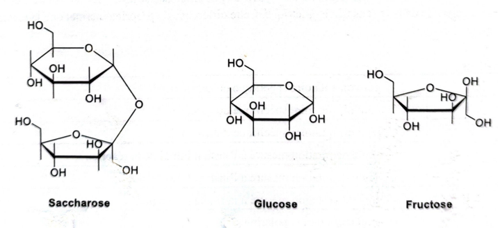 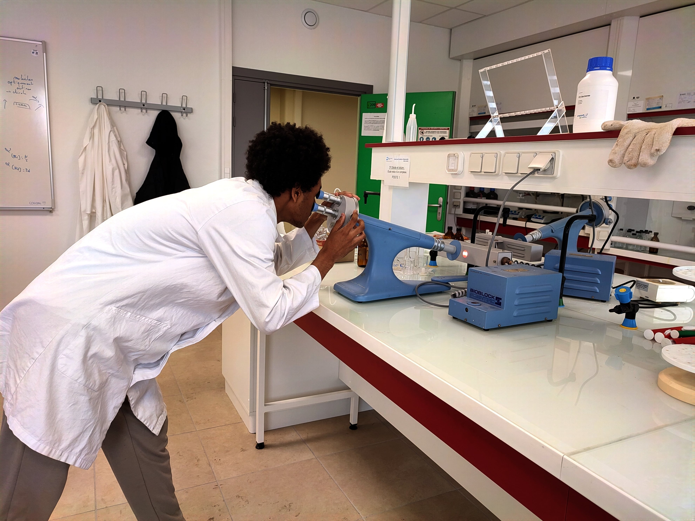Objectifs
Étudier la cinétique de pseudo-premier ordre de la réaction d’inversion du saccharose par polarimétrie. Les objectifs spécifiques sont :
- Suivre la réaction dans le temps à l’aide d’un polarimètre
- Déterminer l’ordre partiel de la réaction par rapport au saccharose
- Calculer les constantes de vitesse (k1 et k2) à différentes concentrations d’acide chlorhydrique
- Évaluer l’impact d’un catalyseur (H⁺) sur la vitesse de réaction
- Étudier le lien entre la rotation optique et l’avancement de la réaction
Ce qu’on a fait
La réaction étudiée est l'hydrolyse acide du saccharose en glucose et fructose, deux sucres formant le "sucre inverti". Ce dernier est très utilisé dans l’industrie alimentaire.
En utilisant un grand excès d’eau, nous avons modélisé la réaction comme une cinétique de pseudo-premier ordre. La polarimétrie a été utilisée pour suivre l’évolution de la réaction, puisque le saccharose est dextrogyre et le mélange final est lévogyre, ce qui permet de relier l’angle de rotation de la lumière à l’avancement réactionnel.
Manipulations réalisées :
1. Préparation de la solution mère de saccharose (28,5 g dans 100 mL d’eau).
2. Mesure de l’angle de rotation initial (α₀) par polarimétrie.
3. Réalisation de la réaction en deux milieux acides : N/2 (0,835 M) et 2N (3,33 N) d’HCl.
4. Suivi de la cinétique toutes les 10 minutes pendant 1h à 1h30 dans chaque milieu.
5. Mesures des angles de rotation (α) au cours du temps, et calculs des valeurs (α - α∞), puis traçage des courbes log(α - α∞) = f(t) pour vérifier le comportement de premier ordre.
6. Détermination des constantes de vitesse k₂ à partir des courbes, puis calcul des constantes k₁ à l’aide de la relation k₂ = k₁[H₂O].
7. Étude de l’influence de l’acide chlorhydrique sur la vitesse de réaction.
Conclusion
Cette manipulation a permis de vérifier que l’inversion du saccharose suit une cinétique de premier ordre vis-à-vis du saccharose, en présence d’un excès d’eau. L’utilisation du polarimètre s’est révélée efficace pour suivre la réaction grâce aux propriétés optiques différentes entre le saccharose et le sucre inverti.
Les résultats ont montré que la constante de vitesse augmente avec la concentration d’HCl, confirmant que les ions H⁺ catalysent la réaction. Cette expérience a aussi permis d’appliquer concrètement la loi de Biot et Savart dans le cadre d’une cinétique chimique, et d’observer l’effet de différents paramètres (température, concentration, catalyse) sur la vitesse de réaction.
Enfin, les résultats expérimentaux obtenus pour les pouvoirs rotatoires spécifiques sont cohérents avec les valeurs de la littérature, ce qui valide notre protocole expérimental.
TP2 : Cinétique du deuxième ordre par conductimétrie
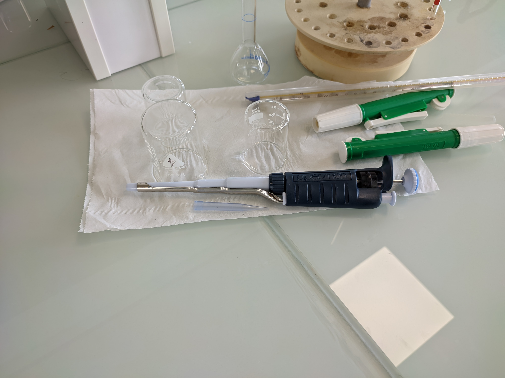 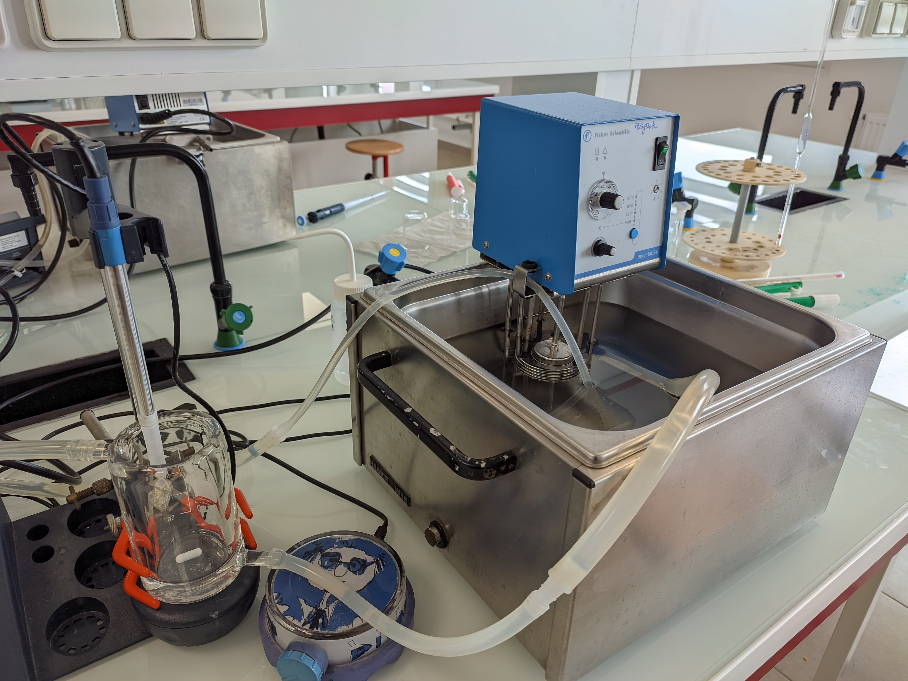Objectifs
Étudier la cinétique du deuxième ordre de la réaction de saponification de l’acétate d’éthyle par la soude, en utilisant la conductimétrie. Les objectifs spécifiques sont :
- Suivre la réaction dans le temps à l’aide de la conductimétrie
- Déterminer l’influence de la température sur la vitesse de réaction
- Calculer l’énergie d’activation de la réaction
Ce qu’on a fait
La réaction étudiée est la saponification de l’acétate d’éthyle par la soude. La solution est un mélange hydro-alcoolique à 50%.
En suivant cette réaction par conductimétrie, on a observé l’évolution de la conductance au fur et à mesure que la réaction progresse. La conductance diminue au fur et à mesure que l’OH⁻ est consommé et que de nouvelles espèces sont formées.
Manipulations réalisées :
1. Préparation de la solution de soude N/10 en milieu hydro-alcoolique.
2. Mesure de la conductance initiale (Gi) avant réaction.
3. Ajout rapide de l’acétate d’éthyle dans la solution de soude et suivi de la réaction à température constante (25°C et 35°C).
4. Mesure de la conductance à intervalles réguliers (chaque minute, puis toutes les 2 minutes et 10 minutes).
5. Traçage des courbes G = f(t) et étude de la variation de conductance.
6. Détermination des constantes de vitesse et calcul de l’énergie d’activation à partir de la loi d’Arrhénius.
Conclusion
Cette manipulation a permis de montrer que la réaction de saponification suit une cinétique du deuxième ordre, comme prévu. L’influence de la température sur la vitesse de réaction a été observée, et les résultats expérimentaux ont permis de déterminer l’énergie d’activation de la réaction.
La conductimétrie s'est révélée être un outil puissant pour suivre cette réaction, car elle permet de mesurer directement la variation de la conductance en fonction de l'avancement de la réaction. Les résultats obtenus confirment l'impact de la température sur la vitesse de la réaction, et l'application de la loi d’Arrhénius a permis de calculer l’énergie d’activation.
En conclusion, l’étude de cette cinétique par conductimétrie est un bon exemple de l’utilisation de méthodes physiques pour suivre l’évolution d’une réaction chimique et déterminer ses paramètres cinétiques.
TP3 : Suivi cinétique par spectrophotométrie UV-visible
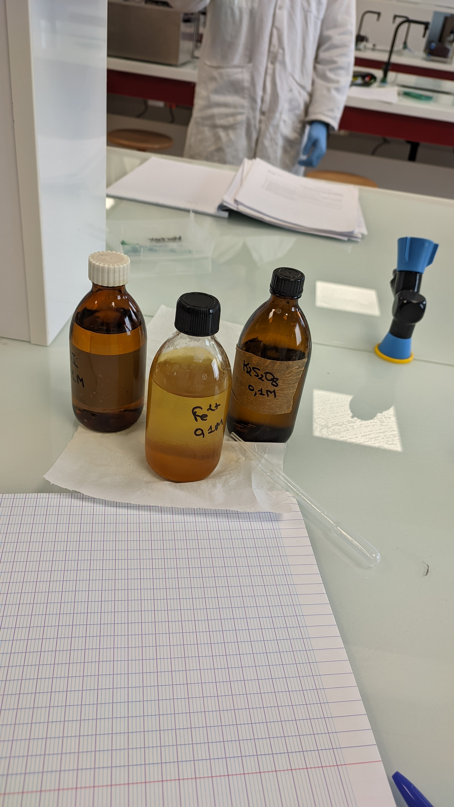 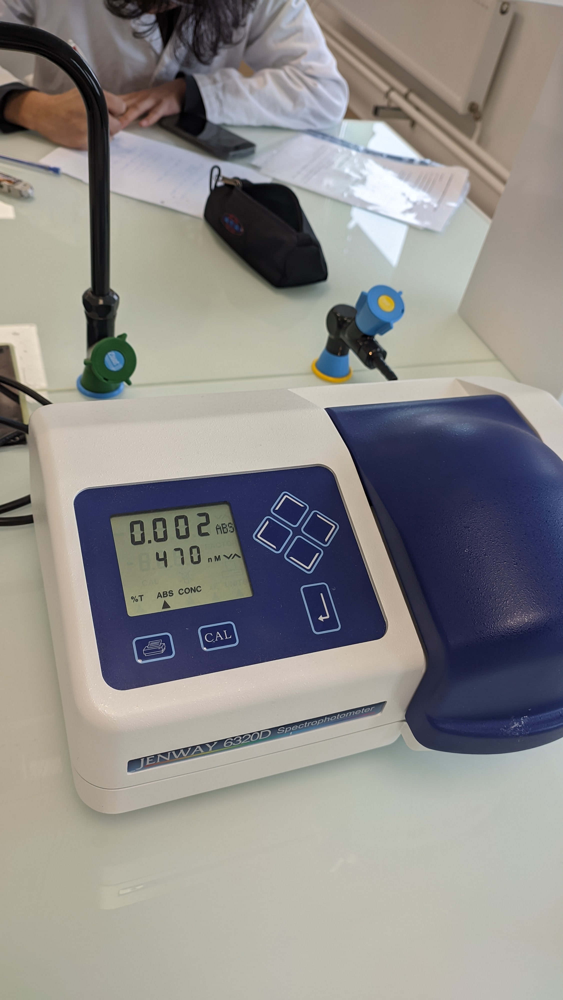Objectifs
Étudier la cinétique de la réaction d'oxydation des ions iodure (I⁻) par le peroxodisulfate (S₂O₈²⁻) par spectrophotométrie UV-visible. Les objectifs spécifiques sont :
- Déterminer les ordres partiels de la réaction par rapport aux réactifs
- Travailler dans des conditions de dégénérescence de l'ordre
- Calculer les constantes de vitesse et le temps de demi-réaction
Ce qu’on a fait
La réaction étudiée est l’oxydation des ions iodure (I⁻) par le peroxodisulfate (S₂O₈²⁻) dans un solvant aqueux. Le suivi de la réaction est réalisé par spectrophotométrie à une longueur d'onde de 470 nm, où seule l'espèce I₃⁻ (triiodure) absorbe la lumière visible.
Manipulations réalisées :
1. Préparation de la solution de KI et ajout du catalyseur (sel de Mohr).
2. Réalisation de la réaction dans un Erlenmeyer sous agitation.
3. Suivi de la réaction par spectrophotométrie à 470 nm.
4. Mesure de l'absorbance à intervalles réguliers pendant 5 minutes, puis à des intervalles plus longs jusqu'à stabilisation.
5. Tracé des courbes absorbance vs temps et analyse des données pour déterminer l'ordre partiel de la réaction.
6. Étude de l'influence du catalyseur (sel de Mohr) sur la vitesse de réaction.
Conclusion
Cette manipulation a permis de démontrer que la réaction d'oxydation des ions iodure par le peroxodisulfate suit une cinétique de premier ordre par rapport au peroxodisulfate. L’analyse des données spectrophotométriques a permis de déterminer la constante de vitesse et le temps de demi-réaction.
L'absorbance a évolué de manière prévisible au cours de la réaction, ce qui a permis de valider le modèle cinétique supposé. Le suivi spectrophotométrique à 470 nm s'est avéré efficace pour observer l'avancement de la réaction.
L'influence du catalyseur (sel de Mohr) a été étudiée, et les résultats ont montré une accélération de la réaction en présence de ce catalyseur. L'application des potentiels standards a permis de déterminer les sous-réactions et de conclure sur la vitesse relative de celles-ci par rapport à la réaction globale.
Enfin, les valeurs expérimentales obtenues pour les constantes de vitesse ont été cohérentes avec la théorie, et les calculs du temps de demi-réaction ont montré l'impact significatif du catalyseur sur la vitesse de réaction.
CAPTEURS DE TEMPÉRATURE A RÉSISTANCE
Objectifs
L'objectif de cette manipulation est de contrôler la résistance d'un capteur Pt100 pour plusieurs températures, d'étalonner la résistance d'une thermistance CTN en fonction de la température, de mesurer la tension de déséquilibre d'un pont de Wheatstone avec une sonde Pt100 et de contrôler les caractéristiques d'un transmetteur de température pour sonde Pt100.
Ce qu’on a fait
Les différentes étapes de l'expérience ont été réalisées simultanément pour optimiser le temps. Les mesures ont été effectuées pour chaque montage aux températures spécifiées de 0°C, température ambiante, puis tous les 10°C de 30°C à 80°C.
1. **Contrôle d’un capteur Pt100 (3 fils)** :
La résistance du capteur a été mesurée avec un multimètre sur la fonction ohmmètre. Le montage a été réalisé en utilisant deux fils pour contourner la limitation du multimètre à une liaison 3 fils. La résistance a été corrigée en soustrayant la résistance des fils. Les valeurs de la résistance de Pt ont été mesurées pour des températures allant de 0°C à 80°C. Un tableau a été créé pour comparer les valeurs expérimentales avec celles de la table d'étalonnage selon la norme NF C 42-330, et les écarts ont été analysés.
2. **Étalonnage d'une thermistance C.T.N.** :
La résistance de la thermistance a été mesurée à différentes températures avec un ohmmètre numérique. La courbe \(R_{\text{th}} = f(\theta)\) a été tracée, et l'appellation CTN a été justifiée. Ensuite, une courbe \( \ln(R_{\text{th}}) = f(1/T) \) a été tracée et la loi de variation de la résistance de la thermistance a été vérifiée par les paramètres \(R_0\) et \(B\). La sensibilité de la thermistance a été calculée pour deux plages de température.
3. **Étalonnage de la tension d'un pont de Wheatstone connecté à un capteur Pt100** :
Un montage de pont de Wheatstone a été utilisé pour transformer la résistance du capteur Pt100 en une tension \(u\). La tension a été mesurée à différentes températures et une courbe \(u = f(\theta)\) a été tracée. La variation de la tension avec la température a été analysée, et la sensibilité moyenne du montage a été calculée. Des suggestions ont été faites pour augmenter la sensibilité.
4. **Caractéristique d'un transmetteur de température pour capteur Pt100** :
Les caractéristiques du transmetteur ont été relevées et une équation théorique de la caractéristique a été dérivée. Le montage pour contrôler le signal de sortie en fonction de la température a été réalisé, et la caractéristique \(I = f(\theta)\) a été tracée. L'équation expérimentale a été comparée à celle attendue et les écarts ont été analysés. La sensibilité théorique a été vérifiée.
Conclusion
Cette expérience a permis de valider plusieurs principes liés à la mesure de température. Les résultats expérimentaux pour les capteurs Pt100 ont montré des écarts minimes par rapport aux valeurs théoriques, ce qui peut être expliqué par l'incertitude de mesure du multimètre utilisé. La thermistance CTN a montré une variation non linéaire de la résistance, confirmant sa caractéristique. Le pont de Wheatstone a permis de transformer la résistance du capteur Pt100 en une tension mesurable, et la sensibilité a été calculée et analysée. Enfin, le transmetteur de température a montré une bonne concordance entre les valeurs mesurées et celles théoriques, bien que des ajustements sur le réglage du zéro et de la pente soient possibles.
TP - Étude d’un filtre amplificateur
Objectifs
L'objectif de cette manipulation est d'étudier le fonctionnement d'un amplificateur opérationnel dans le cadre d'un montage amplificateur-inverseur, de tester la linéarité du signal amplifié et de mesurer la réponse en fréquence d'un amplificateur opérationnel.
Ce qu’on a fait
Les différentes étapes de l'expérience ont été réalisées de manière séquentielle pour observer le comportement de l'amplificateur dans différentes conditions. Les mesures ont été effectuées pour chaque montage avec des températures et des tensions spécifiées.
1. **Contrôle de l'amplificateur opérationnel (AOp)** :
Un amplificateur opérationnel A 741 a été utilisé dans un montage amplificateur-inverseur. Les tensions d'entrée et de sortie ont été mesurées à différentes températures pour étudier la relation entre les deux. Un tableau des valeurs expérimentales a été comparé avec les valeurs théoriques pour analyser les écarts.
2. **Étalonnage de la linéarité de l'amplificateur** :
La linéarité du montage a été étudiée en mesurant la tension de sortie \(V_s\) en fonction de la tension d'entrée \(V_e\) pour différentes valeurs de \(V_e\). La courbe obtenue a été tracée et la distorsion harmonique a été analysée. Les limites de la tension de sortie et l'amplification expérimentale ont été calculées.
3. **Réponse en fréquence de l'amplificateur** :
La réponse en fréquence de l'amplificateur a été mesurée en variant la fréquence du signal d'entrée \(V_e\). La courbe \(A = V_s / V_e\) a été tracée en fonction de la fréquence, et la fréquence de coupure à -3 dB a été déterminée. L'amplification expérimentale a été comparée à la valeur théorique.
4. **Mesure de la vitesse de balayage de l'amplificateur (slew-rate)** :
La vitesse de balayage de l'amplificateur a été mesurée à l'oscilloscope pour déterminer la pente maximale de variation de la tension de sortie. La valeur mesurée a été comparée avec la valeur théorique de la vitesse de balayage spécifiée pour l'amplificateur opérationnel utilisé.
Conclusion
Cette expérience a permis de valider plusieurs principes relatifs à l'amplification des signaux. Les résultats expérimentaux ont montré une bonne conformité avec les valeurs théoriques, bien que des petites divergences aient été observées dues à l'incertitude de mesure des instruments utilisés. La réponse en fréquence et la vitesse de balayage ont confirmé les limites pratiques du montage. Les caractéristiques du montage amplificateur-inverseur ont été bien comprises et validées expérimentalement.
TP Actionneurs - Convertisseurs
Objectifs
L'objectif de cette manipulation est de comprendre et de réaliser des montages permettant de contrôler la puissance d'une résistance chauffante à l'aide d'un comparateur, d'étudier les caractéristiques des convertisseurs pression/intensité et intensité/pression, ainsi que d'analyser les performances d'un convertisseur tension/intensité. Les différentes étapes de cette expérience permettent de mesurer les relations entre les signaux d'entrée et de sortie pour ces systèmes.
Ce qu’on a fait
Les différentes étapes de l'expérience ont été réalisées en suivant les instructions des sections correspondantes, avec un focus particulier sur les montages de comparateur et les convertisseurs. Les mesures ont été effectuées dans le respect des conditions spécifiées pour chaque dispositif.
1. **Montage comparateur pour la commande d’une résistance chauffante** :
Le comparateur a été utilisé pour générer un signal logique modulé permettant de commander un relais statique et de réguler la puissance de chauffe de la résistance. Le signal UC, mesuré à l'aide d'un potentiomètre rectiligne, a été comparé au signal triangle, et la sortie uS a été observée pour trois valeurs de UC (2V, 5V et 7,5V). Un oscilloscope a été utilisé pour visualiser les signaux Utriangle et uS. Les rapports cycliques ont été calculés et comparés avec les valeurs attendues.
2. **Convertisseurs Pression/Intensité et Intensité/Pression** :
Le premier convertisseur, de type pression/intensité, a permis de mesurer l'intensité en fonction de la pression à l'aide de manomètres numériques et d'un ampèremètre. Les données ont été enregistrées et un graphique a été tracé pour analyser la relation entre la pression et l'intensité. Pour le convertisseur inverse, de type intensité/pression, un générateur de tension a été utilisé pour fournir le signal d'entrée, et les données de pression en sortie ont été collectées et analysées de manière similaire.
3. **Réglage d'un convertisseur Tension/Intensité** :
Le convertisseur U/I a été testé en générant une tension de 0 à 10V à l’aide d’un potentiomètre rectiligne et en mesurant l’intensité de sortie correspondante. Les courbes du signal de sortie en fonction du signal d’entrée ont été tracées, et les résultats ont été comparés aux valeurs théoriques. L’étalonnage a permis de s'assurer de la conformité des réglages du convertisseur.
Conclusion
Cette manipulation a permis de comprendre et de contrôler plusieurs aspects importants de la commande de dispositifs à l’aide de signaux modulés, tels que la régulation de la puissance d’une résistance chauffante par un comparateur, ainsi que le fonctionnement de convertisseurs dans des systèmes industriels. Les résultats expérimentaux ont montré une bonne concordance avec les valeurs théoriques, bien que des ajustements fins puissent être nécessaires dans les applications réelles. L’analyse des rapports cycliques et des courbes des convertisseurs a permis de vérifier la validité des systèmes étudiés.
TP Thermocouple - Temps de réponse
Objectifs
L'objectif de ce TP est de réaliser une étude expérimentale sur les thermocouples et d'analyser leur comportement pour diverses températures et conditions. Plus précisément, il s'agit de contrôler la f.e.m. d'un thermocouple, de corriger la température de la jonction froide, et d'évaluer le temps de réponse de différents capteurs de température sous des variations brusques de température.
1. Contrôle de la f.e.m. d'un thermocouple
L'objectif ici est de mesurer la f.e.m. du thermocouple pour plusieurs températures et de comparer ces mesures à celles de la table d'étalonnage.
Les étapes ont été les suivantes :
- Les deux jonctions du thermocouple ont été placées dans le même bain thermostaté à 50°C. La f.e.m. a été mesurée pour différentes températures, notamment à température ambiante, 35°C et 50°C.
- Une des jonctions a été placée dans de la glace fondante (0°C), et l'autre dans le bain thermostaté à différentes températures.
- Les résultats ont été comparés à ceux de la table d'étalonnage, avec une analyse des écarts, expliquant les différences par l'incertitude de mesure (voltmètre).
Les résultats ont été présentés dans un tableau avec les valeurs expérimentales et théoriques de la f.e.m., les écarts et les incertitudes.
Calcul de la sensibilité moyenne : La sensibilité moyenne du thermocouple entre 35°C et 50°C a été calculée et comparée à la valeur de la table d'étalonnage.
2. Correction de la jonction froide (ou jonction de référence)
Cette partie vise à corriger la f.e.m. mesurée en tenant compte du fait que la jonction de référence n'est pas à 0°C.
Les étapes étaient les suivantes :
- Pour le thermocouple à deux soudures, une jonction a été placée dans le bain thermostaté (50°C) et l'autre dans de l'eau à température ambiante.
- La f.e.m. a été mesurée et corrigée pour tenir compte de la jonction de référence non à 0°C.
- Les résultats corrigés ont été comparés à ceux de la table d'étalonnage et la loi des températures successives a été vérifiée.
3. Utilisation d’un thermocouple à une soudure
Le thermocouple à une soudure a été utilisé pour étudier l'influence de la jonction de référence et de l'extension du câble.
Les expériences ont consisté à utiliser successivement les trois montages suivants :
- Montage avec deux conducteurs isolés prolongés par des conducteurs gainés d'isolant vert, avec une jonction intermédiaire dans un bécher d'eau froide ou chaude.
- Montage similaire mais avec un câble d'extension.
- Sonde à immersion avec poignée, reliée à l'appareil de mesure par un câble d'extension.
Les f.e.m. mesurées ont été corrigées pour la température de la jonction de référence et comparées avec les valeurs théoriques.
4. Temps de réponse des capteurs de température
L'objectif est d'évaluer le temps de réponse des capteurs de température sous des variations brusques de température.
Les conditions expérimentales sont les suivantes :
- Les capteurs sont placés dans un liquide dont la température varie brusquement.
- Le temps de réponse est mesuré pour différentes configurations de capteurs, notamment avec ou sans puits thermométrique et avec des capteurs de différentes tailles.
- Les conditions expérimentales comprennent la montée ou descente en température dans différents milieux (eau à température ambiante et eau à température thermostatisée).
Le temps de réponse tr0,9 a été déterminé pour chaque essai et enregistré dans un tableau pour comparaison.
Exploitation des résultats
Les résultats expérimentaux ont été rassemblés dans un tableau avec les temps de réponse pour chaque configuration de capteur et pour chaque condition expérimentale (dimension du capteur, avec ou sans puits thermométrique, etc.). Les écarts ont été analysés et les conclusions ont été tirées en fonction de l'influence de ces facteurs sur le temps de réponse du capteur.
Conclusion
Les résultats ont montré que :
- Le temps de réponse des capteurs dépend fortement de leur taille, de l'usage d'un puits thermométrique et des conditions de température (agitation ou non du liquide).
- Les capteurs plus petits ont tendance à avoir des temps de réponse plus rapides, ce qui est cohérent avec leur plus petite masse thermique.
- Les puits thermométriques influencent également le temps de réponse, et leur nature (cuivre vs acier inoxydable) a un impact mesurable.